Renal Physiology, Explained
Everything in renal physiology, in the order that makes it easiest to learn. Each idea is explained once. Every equation comes with the steps for using it in a problem.
Body fluids
Water is most of the body. Every fluid problem asks the same two things: which compartment changed size, and did its concentration change?
How much water, and where it sits
Total body water (TBW) is about 60% of body weight in a man and 50% in a woman. Fat holds almost no water, so more fat means a lower percentage. It also falls with age: about 75–80% in a newborn, 60% in a young adult, 50% in the elderly. One liter of water weighs one kilogram, so a 70 kg man holds 0.6 × 70 = 42 L.
Use the 60–40–20 rule: water is 60% of body weight, of which 40% is inside cells and 20% is outside.
| Compartment | Size | Main solutes | Measured with |
|---|---|---|---|
| Total body water | 60% of weight | — | Tritiated water, D₂O (heavy water), antipyrine |
| Intracellular fluid (ICF) | ⅔ of TBW (40% of weight) | K⁺, Mg²⁺, protein, organic phosphates | No marker: TBW − ECF |
| Extracellular fluid (ECF) | ⅓ of TBW (20% of weight) | Na⁺, Cl⁻, HCO₃⁻ | Inulin, mannitol, sulfate |
| Interstitial fluid | ¾ of ECF | Same as plasma, minus protein | No marker: ECF − plasma |
| Plasma | ¼ of ECF | Na⁺, Cl⁻, HCO₃⁻, protein | Radioactive albumin, Evans blue (a dye that sticks to albumin) |
A marker measures the space it can reach. Tritiated water crosses every membrane, so it fills all the water. Mannitol and inulin get out of capillaries but cannot enter cells, so they fill the ECF. Albumin is too big to leave the capillaries, so it stays in plasma.
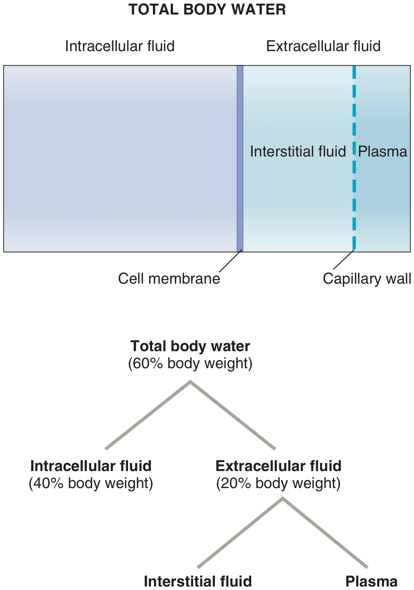
Interstitial fluid is the fluid that bathes the cells. It is plasma that has been filtered through the capillary wall, so it has the same small ions but almost no protein. Plasma proteins are negative and trapped in the vessels, so they hold a few extra positive ions with them. That leaves plasma with slightly more Na⁺ and interstitial fluid with slightly more Cl⁻. This small protein-driven imbalance is the Gibbs–Donnan effect.
Measuring a compartment: the dilution method
Inject a known amount of marker, let it spread, then measure its concentration.
Volume = amount injected − amount lost in urineconcentration in plasma
The problem gives you the marker, the amount injected and the plasma concentration after mixing. Or it gives a patient's weight and a target drug level.
- Name the compartment from the marker (table above). A drug with no protein binding spreads through all body water, like tritiated water. A drug stuck to plasma protein stays in plasma.
- Subtract any marker lost in the urine.
- Volume = amount ÷ concentration. Check that the units cancel to liters.
- For ICF or interstitial fluid, measure the two neighbors and subtract.
- For a dose, turn it around: dose = volume × target concentration.
Worked. 800 mCi of tritiated water is injected and plasma reads 20 mCi/L. TBW = 800 ÷ 20 = 40 L.
Worked. A 100 kg woman needs a drug that fills total body water, at 5 µg/mL. TBW = 100 × 0.5 = 50 L. 5 µg/mL = 5 mg/L. Dose = 50 L × 5 mg/L = 250 mg.
Trap: dividing upside down (20 ÷ 800). The answer must be a believable number of liters.
A drug that binds plasma protein needs a larger dose, because the bound part is held in plasma and does nothing.
Hematocrit (Hct) is the fraction of blood that is red cells, about 0.45. The rest, 1 − Hct, is plasma.
Blood volume = plasma volume1 − Hct
Plasma 3 L and Hct 0.40 give 3 ÷ 0.6 = 5 L of blood.
Plasma osmolarity
Osmolarity is the number of dissolved particles per liter. Normal plasma is about 290 mOsm/L (round to 300).
Plasma osmolarity = 2 × Na⁺ + glucose18 + BUN2.8
Na⁺ in mEq/L. It is doubled because every Na⁺ travels with a negative partner (Cl⁻ or HCO₃⁻). Glucose and BUN (blood urea nitrogen) are in mg/dL, and dividing by 18 and 2.8 converts them to mOsm/L.
Worked. Na⁺ 140, glucose 90, BUN 14: 280 + 5 + 5 = 290 mOsm/L. Na⁺ does nearly all the work, so a quick estimate is 2 × Na⁺.
This formula is an estimate. The lab measures the true value with an osmometer. A measured value far above the calculated one means some extra solute is in the blood Ch 12.
Fluid shifts between compartments
Three facts decide every shift.
- Every gain or loss happens first in the ECF, because gut, skin, kidney and IV lines all connect to plasma.
- Water crosses cell membranes freely. So water moves until ICF and ECF osmolarity are equal again.
- NaCl and mannitol cannot enter cells. They stay in the ECF and hold water there.
The problem gives you a patient who lost or gained fluid, or a diagram to match.
- ECF volume. Fluid lost is a contraction. Fluid gained is an expansion.
- ECF osmolarity. Compare what was lost or gained with plasma. Same concentration as plasma: osmolarity unchanged (isosmotic). More water than salt lost, or salt gained: osmolarity rises (hyperosmotic). Salt lost, or water gained: osmolarity falls (hyposmotic).
- ICF. Water moves toward the saltier side. If ECF osmolarity rose, cells shrink. If it fell, cells swell. If unchanged, nothing happens to cells.
The name describes the result, not the fluid lost. Sweat is dilute, so losing it leaves the body hyperosmotic.
| Type | Examples | ECF volume | ICF volume | Osmolarity | Hematocrit | Plasma protein |
|---|---|---|---|---|---|---|
| Isosmotic contraction | Diarrhea, vomiting, burns, bleeding | ↓ | same | same | ↑ | ↑ |
| Hyperosmotic contraction | Sweating, fever, no water, diabetes insipidus | ↓ | ↓ | ↑ | same | ↑ |
| Hyposmotic contraction | Adrenal insufficiency; salt and water lost, then replaced with water only | ↓ | ↑ | ↓ | ↑ | ↑ |
| Isosmotic expansion | IV normal saline | ↑ | same | same | ↓ | ↓ |
| Hyperosmotic expansion | Salt tablets, hypertonic saline, mannitol | ↑ | ↓ | ↑ | ↓ | ↓ |
| Hyposmotic expansion | SIADH, drinking plain water, D5W | ↑ | ↑ | ↓ | same | ↓ |
The three that need a reason:
Sweating. Sweat has more water than salt. ECF osmolarity rises, water leaves the cells, and both compartments shrink.
Adrenal insufficiency. Without aldosterone the kidney loses NaCl. ECF osmolarity falls, water enters the cells. So the ECF shrinks while the ICF swells.
SIADH (too much antidiuretic hormone) and plain water. The kidney keeps water without salt. Water spreads over all compartments, ⅓ to ECF and ⅔ to ICF. D5W (5% dextrose in water) acts as plain water because the glucose is burned.
Plasma protein simply follows ECF volume: concentrated in a contraction, diluted in an expansion. Hematocrit has two inputs, because red cells are cells. ECF volume concentrates or dilutes them, and osmolarity shrinks or swells them. In hyperosmotic contraction the red cells are more concentrated but smaller, so the two effects cancel and hematocrit does not change. The same cancelling happens in hyposmotic expansion.
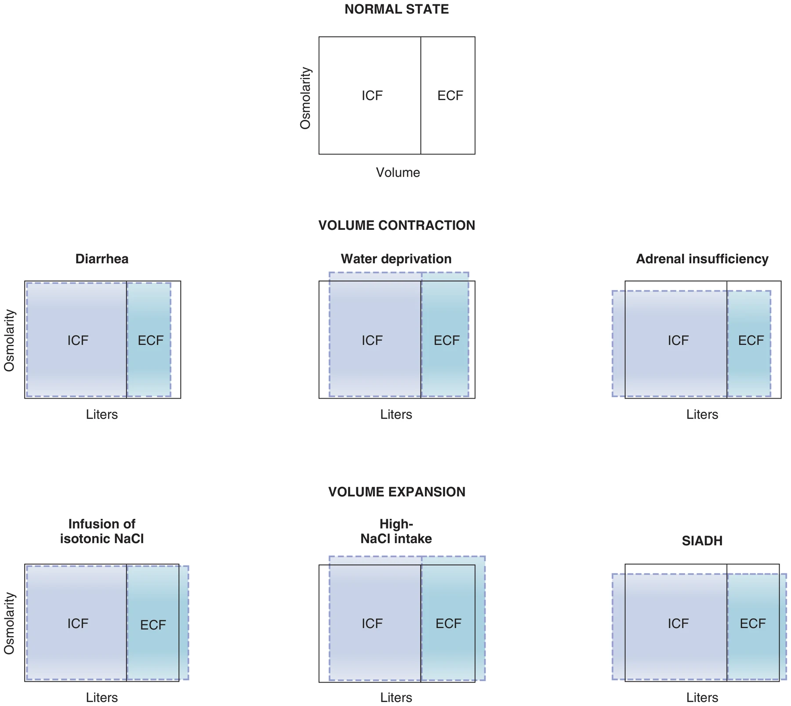
Only the ECF box gets narrower and the height does not change: an isosmotic loss, such as diarrhea. Both boxes get lower, the ECF narrower and the ICF wider: salt was lost, adrenal insufficiency. The ECF gets wider, the ICF narrower, and both get taller: salt was added, salt tablets.
"Contraction" and "expansion" describe the ECF only. The ICF can go the other way. Albumin and Evans blue measure plasma, not ECF. Inulin measures ECF volume here and GFR in Ch 4.
The kidney and the nephron
A nephron filters plasma at its start. Its tubule then takes back what the body needs and adds what the body must lose.
What the kidneys do
The kidneys excrete water, salts, acid and wastes, which sets the volume and make-up of the body fluids. They also make three hormones.
| Hormone | What it does | Lost in chronic kidney failure |
|---|---|---|
| Renin | Starts the system that keeps Na⁺ and raises blood pressure Ch 6 | — |
| Erythropoietin (EPO) | Tells bone marrow to make red cells | Anemia |
| 1,25-dihydroxyvitamin D (active vitamin D) | Makes the gut absorb Ca²⁺ Ch 8 | Low Ca²⁺ |
Anemia plus low Ca²⁺ means the kidney failure is chronic. Both come from lost hormone production, which takes months to show. Fluid overload, high K⁺ and metabolic acidosis are failures of excretion, so they appear in acute failure too.
Layout of the kidney
The kidneys lie behind the peritoneum (retroperitoneal). The outer layer is the cortex. The inner layer is the medulla, arranged as pyramids. Urine leaves the tip of each pyramid (the papilla) and runs: minor calyx → major calyx → renal pelvis → ureter → bladder.
The nephron
The nephron is the working unit. There are about 1 million in each kidney. It begins with the glomerulus, a tuft of capillaries inside Bowman's capsule. Blood enters the tuft through the afferent arteriole and leaves through the efferent arteriole. Sitting between two arterioles keeps the pressure in these capillaries high, and that pressure drives filtration. The capillaries are wrapped by podocytes, the inner layer of the capsule.

| Segment | Where | Main job |
|---|---|---|
| Proximal tubule | Cortex | Bulk reabsorption: ⅔ of the filtered water and Na⁺, and all the glucose and amino acids |
| Thin descending limb | Medulla | Water leaves. Salt cannot. |
| Thin and thick ascending limb | Medulla, back up to cortex | Salt leaves. Water cannot. This dilutes the fluid. |
| Distal convoluted tubule | Cortex | More salt out, still no water. Ca²⁺ reabsorption is controlled here. |
| Late distal tubule and collecting duct | Cortex down to papilla | Fine-tuning by hormones: Na⁺, K⁺, H⁺ (aldosterone) and water (ADH) |
Proximal tubule cells are built for bulk work. A brush border of microvilli gives a huge surface, and many mitochondria feed the Na⁺/K⁺ pump.
Cortical nephrons are 7 of every 8. Their loops are short and stop in the outer medulla. Juxtamedullary nephrons are 1 of every 8. Their glomeruli sit at the border of cortex and medulla, and their long loops reach the inner medulla. They also have larger glomeruli, so each one filters more. Long loops are what let the kidney make concentrated urine Ch 9.
Blood supply
Renal artery → interlobar → arcuate → interlobular arteries → afferent arteriole → glomerular capillaries → efferent arteriole → peritubular capillaries → veins with the same names → renal vein.
So there are two capillary beds in a row. The first (glomerular) is at high pressure and filters. The second (peritubular) is at low pressure and takes up the fluid the tubule reabsorbs. In juxtamedullary nephrons the efferent arteriole instead forms the vasa recta, long hairpin capillaries that run beside the loops deep into the medulla Ch 9.
The juxtaglomerular apparatus
The end of the thick ascending limb passes between the afferent and efferent arterioles of its own glomerulus. Three cell types meet at this spot.
| Cell | Where | Job |
|---|---|---|
| Macula densa | Wall of the tubule | Senses how much NaCl is flowing past |
| Juxtaglomerular (granular) cells | Wall of the afferent arteriole | Release renin |
| Lacis cells (extraglomerular mesangial cells) | In the angle between the two arterioles | Function unknown |
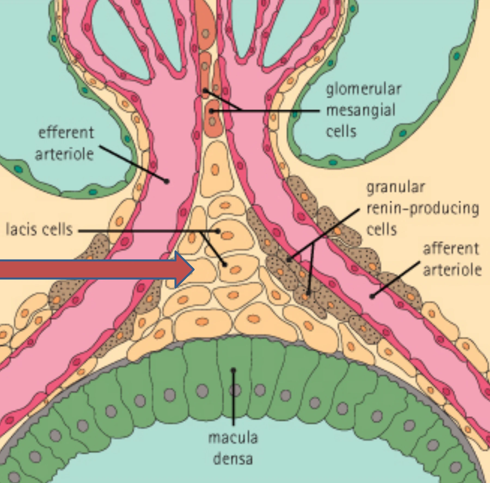
The four processes
Filtration moves fluid from the glomerular capillary into Bowman's space. The filtrate is plasma without cells or protein. Reabsorption moves a substance from the tubule back into the peritubular capillary. Secretion moves a substance from the peritubular capillary into the tubule. Excretion is what finally leaves in the urine.
Excreted = filtered − reabsorbed + secreted
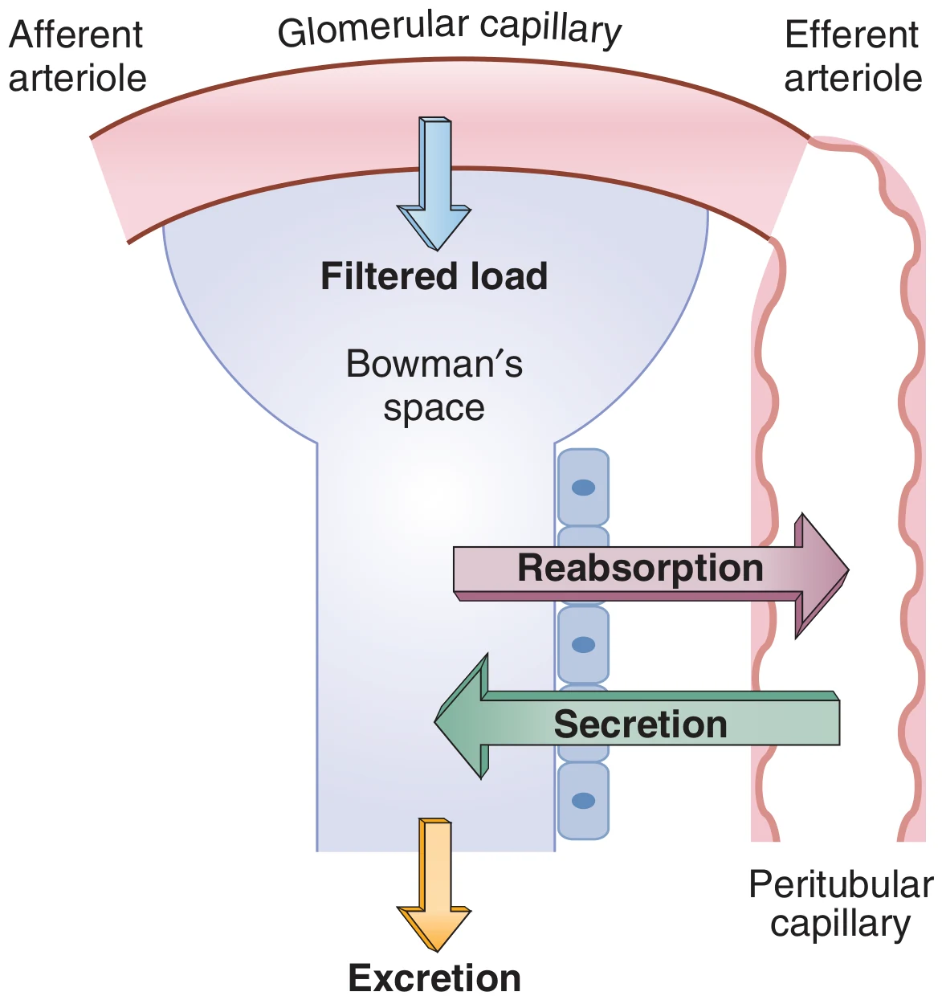
Juxtaglomerular cells make renin and sit in the afferent arteriole. Juxtamedullary nephrons are the nephrons with long loops. The names are close but they are unrelated.
Glomerular filtration and renal blood flow
The glomerulus sits between two arterioles. The pressure trapped between them pushes fluid through a filter, and the tone of each arteriole decides how much blood flows and how much is filtered.
The filter
Fluid passes three layers on its way from capillary blood to Bowman's space.
| Layer | Detail | What it stops |
|---|---|---|
| Fenestrated endothelium | Pores 70–100 nm | Blood cells only |
| Basement membrane | Three layers: lamina rara interna, lamina densa, lamina rara externa | Plasma protein (the main barrier) |
| Podocyte foot processes | Filtration slits about 40 nm, bridged by a slit diaphragm (nephrin, podocin) | Protein that got past the membrane |
The filter sorts by size and charge. A neutral molecule under 4 nm passes freely. Nothing over 8 nm passes. In between, charge decides. All three layers carry fixed negative charges, which repel negative molecules. So at any given size, positive molecules filter best and negative ones worst. Small ions (Na⁺, K⁺, Cl⁻, HCO₃⁻) are far below pore size and filter freely whatever their charge. Albumin is large and negative, so it is held back twice.
Microalbuminuria is 30–300 mg of albumin in the urine per day. It is the first sign of diabetic kidney damage, and it appears because the filter loses its negative charge. A routine dipstick cannot detect so little, so a diabetic with a normal urinalysis still needs a urine microalbumin test. Treatment is a drug that blocks angiotensin II: an ACE inhibitor or an ARB (angiotensin receptor blocker). It dilates the efferent arteriole, which lowers the pressure in the glomerulus, so less protein is pushed through. These drugs slow the kidney damage of diabetes and hypertension, the two main causes of chronic kidney disease.
Starling forces: what pushes fluid through
In words: filtration rate = how leaky the filter is × the net pressure pushing fluid out.
GFR = Kf × [ PGC − PBS − πGC ]
GFR = glomerular filtration rate. Kf = filtration coefficient (water permeability × surface area). PGC = blood pressure inside the glomerular capillary, 45 mm Hg; it pushes fluid out. PBS = fluid pressure in Bowman's space, 10 mm Hg; it pushes back. πGC = oncotic pressure, the pull of plasma protein that holds water in the capillary. Bowman's space has no protein, so its oncotic pressure is 0 and drops out.
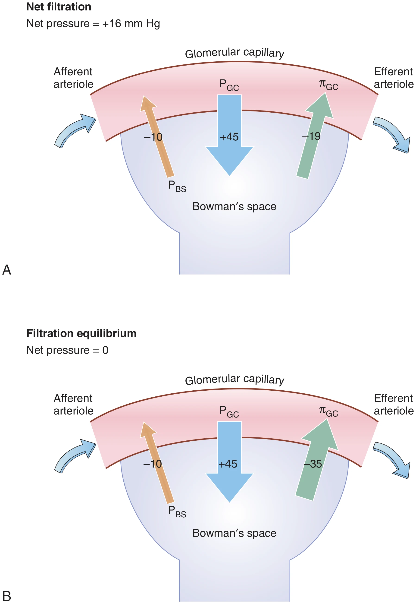
At the start of the capillary: 45 − 10 − 19 = +16 mm Hg, so fluid filters. As protein-free fluid leaves, the protein left behind gets more concentrated, so πGC climbs. It is the only force that changes along the capillary. At the end: 45 − 10 − 35 = 0. Filtration stops. This point is called filtration equilibrium.
Kf in the glomerulus is more than 100 times that of ordinary capillaries, which is why 180 L is filtered each day. An ordinary capillary filters at its arterial end and takes fluid back at its venous end. A glomerular capillary only filters.
The problem gives you a change in the body (a blocked ureter, low plasma protein, a drug) or a set of pressures.
- Decide which term changed: PGC, PBS, πGC or Kf.
- PGC and Kf move GFR in the same direction. PBS and πGC move it in the opposite direction.
- If pressures are given, net pressure = PGC − PBS − πGC.
| Change | Term | GFR |
|---|---|---|
| Kidney stone or other blockage of the ureter | PBS ↑ | ↓ |
| High plasma protein | πGC ↑ | ↓ |
| Low plasma protein | πGC ↓ | ↑ |
| Afferent arteriole dilates, or efferent constricts | PGC ↑ | ↑ |
| Fewer working glomeruli or a thickened filter | Kf ↓ | ↓ |
Afferent versus efferent arteriole
Think of a hose with two clamps and a leaky stretch between them. Tightening either clamp cuts the flow through the hose. But the pressure in the leaky stretch depends on which clamp you tighten.
Constrict the afferent arteriole (the clamp before the glomerulus): less blood gets in, so PGC falls and GFR falls. Plasma flow and GFR fall together, so their ratio, the filtration fraction Ch 4, does not change.
Constrict the efferent arteriole (the clamp after it): blood is dammed up in the glomerulus, so PGC rises and GFR rises, while plasma flow falls. GFR up with flow down means the filtration fraction rises.
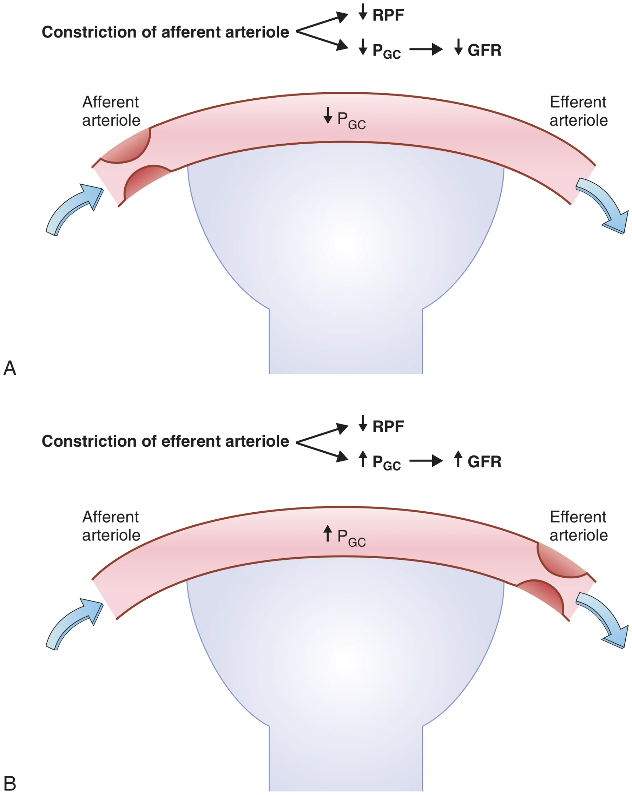
| Change | Renal plasma flow | GFR | Filtration fraction |
|---|---|---|---|
| Constrict afferent | ↓ | ↓ | no change |
| Dilate afferent | ↑ | ↑ | no change |
| Constrict efferent | ↓ | ↑ | ↑ |
| Dilate efferent | ↑ | ↓ | ↓ |
| High plasma protein, or blocked ureter | no change | ↓ | ↓ |
Renal blood flow and what controls the arterioles
The kidneys receive about 25% of cardiac output, roughly 1.25 L/min, although they are under 1% of body weight. Per gram this is the highest flow of any major organ (420 mL/min per 100 g, against 84 for the heart and 54 for the brain). The flow is there for filtering, not for oxygen: the kidneys take so little oxygen out of each liter that they have the smallest arteriovenous O₂ difference of any organ.
Flow = pressure difference ÷ resistance (Q = ΔP/R). The resistance is in the arterioles. The afferent and efferent arterioles are in series, so their resistances add.
| Signal | Action on the arterioles | Flow | GFR |
|---|---|---|---|
| Sympathetic nerves (α₁ receptors) | Constrict afferent more than efferent | ↓ | ↓ |
| Angiotensin II, usual levels | Constricts efferent more than afferent | ↓ | kept up |
| Angiotensin II, very high (hemorrhage) | Constricts both | ↓ | ↓ |
| Prostaglandins (PGE₂, PGI₂) | Dilate both, afferent more | ↑ | ↑ |
| ANP (atrial natriuretic peptide) | Dilates afferent, constricts efferent | ↑ | ↑ |
| Dopamine, low dose | Dilates renal vessels | ↑ | ↑ |
In hemorrhage the body raises sympathetic tone and angiotensin II to hold blood pressure up, at the kidney's expense. The same signals make the kidney release prostaglandins, which dilate the afferent arteriole and protect its blood flow. NSAIDs block prostaglandin synthesis. The constriction is then unopposed, and flow and GFR fall.
An elderly man with diabetes and hypertension starts high-dose ibuprofen and his creatinine rises. The cause is afferent arteriole constriction from lost prostaglandins. The constrictors did not increase. The dilator was removed.
Other constrictors: endothelin, circulating catecholamines. Other dilators: nitric oxide, bradykinin. β receptors do nothing to renal vessels (β₁ only releases renin). Dopamine depends on dose: low dilates renal vessels, medium stimulates the heart (β₁), high constricts vessels (α₁). Low-dose dopamine does not protect the kidneys from injury.
Autoregulation
Renal blood flow and GFR stay almost constant while arterial pressure moves between about 80 and 200 mm Hg. Below 80 they fall with pressure. The kidney does this by changing afferent resistance in step with pressure: if pressure and resistance rise together, flow stays the same. It needs no nerves or hormones, so a transplanted kidney autoregulates normally. Urine output is not autoregulated. It keeps rising as pressure rises.

Two mechanisms do it.
Myogenic. Higher pressure stretches the afferent arteriole wall. Stretch opens Ca²⁺ channels in its smooth muscle, Ca²⁺ enters, and the muscle contracts. Resistance rises and flow returns to normal.
Tubuloglomerular feedback. Higher pressure raises GFR, so more NaCl reaches the end of the thick ascending limb. The macula densa senses the extra NaCl and releases adenosine, which constricts the afferent arteriole. Flow and GFR come back down. A fall in pressure does the reverse.

Sympathetic nerves constrict mainly the afferent arteriole, so GFR falls. Angiotensin II constricts mainly the efferent arteriole, so GFR is kept up. Constricting either one lowers blood flow.
Clearance and the kidney equations
Almost every kidney calculation is built from the same three measurements. Learn what each combination means and the equations stop being separate things to memorize.
Three measurements, three amounts
| Symbol | Meaning | Usual units |
|---|---|---|
| Px | Plasma concentration of substance x | mg/mL, mg/dL or mEq/L |
| Ux | Urine concentration of x | same as P |
| V | Urine flow rate (the dot means "per minute") | mL/min |
The glomeruli filter about 120 mL of plasma each minute, which is 180 L a day. This is the GFR (glomerular filtration rate). A substance is freely filtered if it crosses the filter as easily as water, so the filtrate holds it at its plasma concentration. Water, Na⁺, K⁺, Cl⁻, HCO₃⁻, glucose, urea, inulin, PAH and myoglobin are freely filtered. Albumin and the hormone-binding globulins are not, and neither is any drug or hormone while it is bound to them (though the tubule can still secrete it). Filtration uses no carrier, so it never saturates.
Amount entering the tubule each minute:
Filtered load = GFR × Px
Amount leaving in the urine each minute:
Excretion rate = Ux × V
What the tubule did in between:
Reabsorbed or secreted = filtered load − excretion rate
A positive answer means net reabsorption (less came out than went in). A negative answer means net secretion (the tubule added more).
The problem gives you GFR (or inulin clearance), a plasma concentration, a urine concentration and a urine flow. If it says only "creatinine clearance is normal", that is your cue to use GFR = 120 mL/min.
- Fix the units first. GFR is in mL/min, so the concentration must be per mL. mg/dL ÷ 100 = mg/mL. mEq/L ÷ 1,000 = mEq/mL (or change GFR to L/min instead: 120 mL/min = 0.12 L/min).
- Filtered load = GFR × P.
- Excretion rate = U × V.
- Subtract. Filtered bigger: reabsorbed. Excreted bigger: secreted.
Worked. GFR 120 mL/min. Plasma X = 200 mg per 100 mL. Urine flow 4 mL/min. Urine X = 50 mg per 10 mL.
Units: P = 200 ÷ 100 = 2 mg/mL. U = 50 ÷ 10 = 5 mg/mL.
Filtered = 120 × 2 = 240 mg/min. Excreted = 5 × 4 = 20 mg/min. 240 − 20 = +220, so 220 mg/min is reabsorbed.
Worked, the other way. A drug has P = 0.1 mg/mL, GFR is 100 mL/min and the urine carries 20 mg/min. Filtered = 10 mg/min. 10 − 20 = −10, so 10 mg/min is secreted. The drug behaves like PAH.
Trap: skipping the unit step. Plasma K⁺ 4 mEq/L with GFR 120 mL/min is 4 × 0.12 = 0.48 mEq/min, not 480.
Clearance
Clearance is the volume of plasma that is completely emptied of a substance each minute. It is a volume per minute (mL/min). It is not an amount.
In words: clearance = excretion rate ÷ plasma concentration.
Cx = Ux × VPx
Why it works: U × V is the amount in the urine each minute. Dividing by P asks "how many mL of plasma held that amount?"
The problem gives you U, P and either V or a urine volume collected over a time.
- Get V in mL/min. A 24-hour urine of 1,440 mL is 1,440 ÷ 1,440 min = 1 mL/min.
- Check that U and P are in the same units. They cancel, so any unit works as long as it is the same.
- C = U × V ÷ P. The answer is in mL/min.
Worked (same patient as above). U = 5 mg/mL, V = 4 mL/min, P = 2 mg/mL. C = 5 × 4 ÷ 2 = 10 mL/min.
Trap: the GFR of 120 was given but is not needed for a clearance. Extra numbers are often bait.
Inulin clearance is the GFR
Inulin is freely filtered and then left alone: not reabsorbed, not secreted. Every molecule filtered ends up in the urine. So the plasma cleared of inulin each minute is exactly the plasma filtered each minute.
GFR = Cinulin = Uinulin × VPinulin
The body does not make inulin. It has to be infused, so it is the research standard, not a clinic test.
Two things do not change inulin clearance, even though the formula makes it look as if they should. Urine flow: if a water load raises V five-fold, the urine is five times more dilute, so U falls five-fold and U × V is unchanged (100 × 1 and 20 × 5 both give 100). Plasma inulin: if P doubles, twice as much is filtered and excreted, so the top and bottom of the fraction double together.
Compare any clearance with inulin
Inulin shows what filtering alone does. Any difference from it is the tubule's work.
Clearance ratio = CxCinulin
It is also called the fractional excretion: the fraction of the filtered x that reaches the urine. = 1 filtered only. < 1 net reabsorption (or not freely filtered). > 1 net secretion.
For substance X above: 10 ÷ 120 = 0.08. Only 8% of what was filtered is excreted, so 92% was reabsorbed. That matches 20 ÷ 240.
An exam can ask "reabsorbed or secreted?" in three ways. They are the same question.
| The clue you are given | Net reabsorption | Net secretion |
|---|---|---|
| Excretion rate and filtered load | Excreted < filtered | Excreted > filtered |
| Clearance | Below inulin clearance | Above inulin clearance |
| TF/P along the tubule Ch 5 | Below the inulin line | Above the inulin line |
| Substance | What the kidney does | Clearance |
|---|---|---|
| PAH | Filtered and almost all the rest secreted | Highest: equals renal plasma flow |
| Creatinine | Filtered, slightly secreted | Slightly above GFR |
| Inulin | Filtered only | = GFR |
| Na⁺, urea | Filtered, partly reabsorbed | Below GFR |
| Glucose, amino acids | Filtered, all reabsorbed | 0 |
| Albumin | Not filtered | About 0 |
Creatinine: the GFR marker used in patients
Muscle releases creatinine at a steady rate, so nothing has to be infused. It is freely filtered and not reabsorbed. A small amount is also secreted, so creatinine clearance overestimates GFR slightly (by about 10%).
When GFR falls, less creatinine is filtered, so it builds up in blood. A rising serum creatinine (and BUN, blood urea nitrogen) means a falling GFR. Cimetidine and trimethoprim block creatinine secretion, so they raise serum creatinine without any fall in GFR.
PAH clearance is the renal plasma flow
PAH (para-aminohippuric acid) is filtered, and the proximal tubule secretes nearly all of what was not filtered. So almost every PAH molecule that enters the kidney leaves in the urine in a single pass, and the renal vein carries almost none. The plasma cleared of PAH each minute is therefore all the plasma that arrived.
RPF ≈ CPAH = UPAH × VPPAH
RPF = renal plasma flow, normally about 600 mL/min.

This rests on the Fick principle: amount in = amount out. The exact version is RPF = UPAH × V ÷ (renal artery PAH − renal vein PAH). The clearance formula takes renal vein PAH as 0 and uses any peripheral vein for the arterial value, because no other organ removes PAH.
Renal vein PAH is not quite 0. About 10% of renal plasma flow feeds tissue that cannot secrete PAH (capsule, fat, connective tissue). So CPAH is called the effective renal plasma flow and underestimates the true flow by about 10%.
Renal blood flow and filtration fraction
Blood is plasma plus red cells. Hematocrit (Hct) is the red-cell fraction, so 1 − Hct is the plasma fraction.
RBF = RPF1 − Hct
Filtration fraction is the share of arriving plasma that gets filtered, normally about 20%.
FF = GFRRPF = CinulinCPAH
The problem gives you urine flow, urine and plasma inulin, urine and plasma PAH, and a hematocrit.
- GFR = inulin clearance.
- RPF = PAH clearance.
- RBF = RPF ÷ (1 − Hct). Divide, do not multiply: blood flow must come out bigger than plasma flow.
- FF = GFR ÷ RPF.
Worked. V = 1 mL/min. Inulin: U 120, P 1 mg/mL. PAH: U 6, P 0.01 mg/mL. Hct 0.5.
GFR = 120 × 1 ÷ 1 = 120 mL/min. RPF = 6 × 1 ÷ 0.01 = 600 mL/min. RBF = 600 ÷ 0.5 = 1,200 mL/min. FF = 120 ÷ 600 = 0.20.
The 80% of plasma that is not filtered leaves by the efferent arteriole with all the protein. A higher filtration fraction leaves that blood richer in protein, which matters for reabsorption downstream Ch 6.
Clearance is a volume per minute (mL/min). Excretion rate is an amount per minute (mg/min). Creatinine clearance slightly overestimates GFR. PAH clearance slightly underestimates renal plasma flow.
How the tubule handles a solute
Filtering is the same for every small molecule. What differs is what the tubule does next. Three patterns cover almost everything: carriers that can fill up, diffusion that depends on charge, and concentrations that change as water leaves.
Glucose: reabsorption with a ceiling
Glucose is reabsorbed in the proximal tubule in two steps.
- Lumen side. A sodium–glucose cotransporter (SGLT) carries Na⁺ into the cell down its gradient and drags glucose in with it, uphill.
- Blood side. Glucose leaves the cell downhill through a GLUT carrier. No energy is needed.
The Na⁺ gradient exists only because the Na⁺/K⁺ pump on the blood side keeps cell Na⁺ low. The pump spends the ATP, not SGLT. Using a gradient that a pump built is called secondary active transport. Insulin plays no part.
| Where | Lumen side | Blood side | Built for |
|---|---|---|---|
| Early proximal tubule | SGLT2 (1 Na⁺ per glucose) | GLUT2 | Bulk: weak grip, high capacity. Takes about 90%. |
| Late proximal tubule | SGLT1 (2 Na⁺ per glucose) | GLUT1 | Clean-up: strong grip, low capacity. Takes the last 10%. |
| Small intestine (same design) | SGLT1 | GLUT2 | — |
There is a fixed number of carriers, so there is a most they can move per minute: the transport maximum (Tm), about 375 mg/min for glucose.
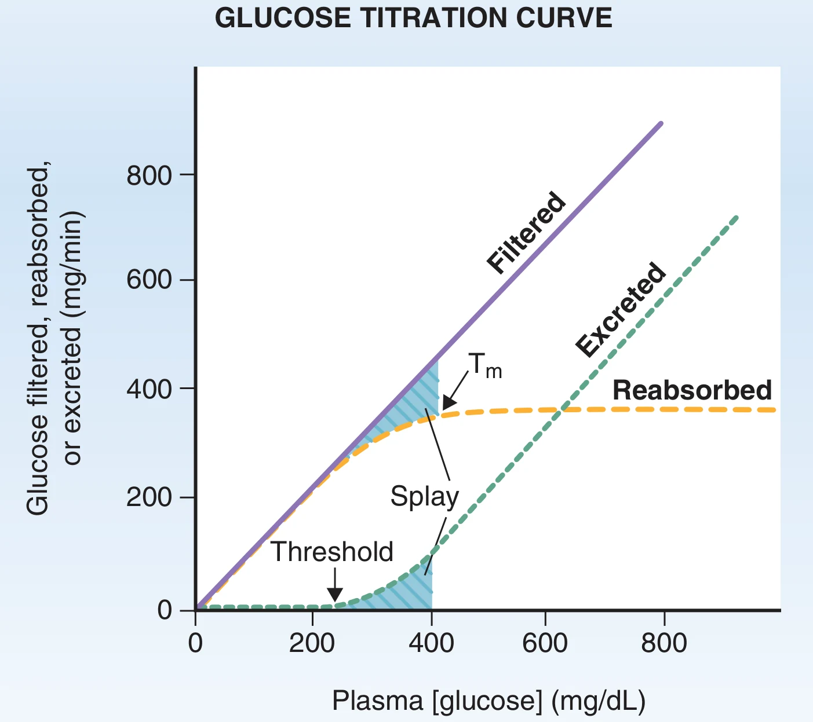
Filtered is a straight line, because filtration never saturates. Reabsorbed follows the filtered line at first (everything filtered is taken back), then bends and goes flat at Tm. Excreted is zero until the threshold, a plasma glucose of about 200 mg/dL, where glucose first shows in the urine. Above about 350 mg/dL every carrier is busy, and excretion rises in step with filtration.
The curved part between threshold and Tm is called splay. Glucose spills before the carriers are completely full because nephrons differ (some reach their own maximum early) and because the carrier's grip on glucose is weak.
The problem gives you a plasma glucose and a GFR (and expects you to know Tm ≈ 375 mg/min).
- Convert plasma glucose to mg/mL (÷ 100).
- Filtered load = GFR × P.
- If the filtered load is below Tm, all is reabsorbed and none is excreted. If it is above Tm, reabsorbed = Tm and excreted = filtered − Tm.
Worked. Glucose 500 mg/dL, GFR 120 mL/min. Filtered = 5 × 120 = 600 mg/min. Reabsorbed = 375. Excreted = 600 − 375 = 225 mg/min.
When glucose spills into the urine, the carrier working at its maximum is SGLT2, because it meets the full load first.
The glucose left in the tubule holds water with it (an osmotic diuresis), which is why uncontrolled diabetes causes heavy urination and thirst. Glucose in the urine has three possible causes: plasma glucose above threshold (diabetes mellitus), a higher filtered load from a raised GFR (pregnancy), or a faulty SGLT, where glucose spills at a normal plasma level.
PAH: secretion with a ceiling
PAH is filtered and also secreted by the proximal tubule, so excretion = filtered + secreted. A carrier on the blood side brings PAH into the cell, and another on the lumen side releases it. Carriers saturate, so secretion has a Tm as well.

This is why PAH measures renal plasma flow only at low plasma levels: above Tm the carriers cannot clear it all Ch 4.
The same organic-acid carrier secretes penicillin and uric acid. Probenecid blocks it, which keeps penicillin in the blood longer. A separate carrier for organic bases is the one that secretes a little creatinine.
Weak acids and bases: urine pH decides
A weak acid or base exists in two forms, charged and uncharged. Only the uncharged form can diffuse through the tubule wall back into blood. The charged form is stuck in the urine and is excreted.
| Charged (trapped) in | To excrete it faster | |
|---|---|---|
| Weak acid (aspirin) | Alkaline urine | Make the urine alkaline |
| Weak base | Acidic urine | Make the urine acidic |
After a suicide attempt a patient is breathing fast and is confused, with ringing in the ears, low serum HCO₃⁻ and a normal ECG. This is aspirin overdose. Giving bicarbonate makes the urine alkaline, so more of the drug is in its charged form. The treatment works by decreasing reabsorption of a weak acid. It does not increase filtration or secretion.
TF/P: following a solute along the tubule
TF/P is the concentration of a solute in tubular fluid divided by its concentration in plasma. Plasma does not change, so TF/P tracks what is happening in the tubule. In Bowman's space it is 1.0 for anything freely filtered. From there, compare each solute with water.
| TF/P | Meaning | Example in the proximal tubule |
|---|---|---|
| Stays at 1 | Reabsorbed in step with water | Na⁺, total osmolarity |
| Falls below 1 | Reabsorbed faster than water | Glucose and amino acids (fall to 0), HCO₃⁻ |
| Rises above 1 | Reabsorbed more slowly than water, or secreted | Cl⁻; inulin (reaches 3); creatinine (just above inulin); PAH (far above: secreted) |
| 0 from the start | Never filtered | Albumin |

Inulin is the water marker. Nothing happens to inulin, so its concentration rises only as water is removed.
Fraction of filtered water reabsorbed = 1 − 1TF/Pinulin
Fraction of filtered x still in the tubule = TF/PxTF/Pinulin
The problem gives you TF/P for inulin and for another solute at some point in the nephron.
- Water reabsorbed so far = 1 − 1 ÷ TF/Pinulin.
- Divide the solute's TF/P by inulin's. That is the fraction of the solute left.
- 1 minus that is the fraction reabsorbed.
Worked. At the end of the proximal tubule TF/Pinulin = 3. Water reabsorbed = 1 − ⅓ = ⅔. Na⁺ has TF/P = 1, so the fraction left = 1 ÷ 3, and ⅔ of the Na⁺ was reabsorbed.
Trap: TF/P = 1 does not mean "not reabsorbed". It means reabsorbed exactly as fast as water.
If a graph gives unlabeled curves, find inulin first: it is the straight line that ends at 3. The line far above it is PAH. The flat line at 1 is Na⁺. The one that drops to 0 in the first quarter of the tubule is glucose or an amino acid (such as lysine).
Sodium and diuretics
Na⁺ is the main solute of the extracellular fluid. Water follows it, so the amount of Na⁺ in the body sets the extracellular volume, the blood volume and the blood pressure.
The plan of the nephron
Na⁺ intake must equal Na⁺ excretion. Keep too much and the ECF expands (edema, hypertension). Lose too much and it contracts (low blood pressure). Note the difference: the amount of Na⁺ sets ECF volume. The concentration of Na⁺ in plasma is a water problem Ch 9.
Na⁺ is freely filtered and more than 99% is reabsorbed. Every tubule cell works the same way on the blood side: the Na⁺/K⁺ pump (Na⁺/K⁺-ATPase) throws 3 Na⁺ out and brings 2 K⁺ in, which keeps cell Na⁺ low. Na⁺ then flows in from the lumen, downhill. Running this pump is the kidney's biggest use of energy. The segments differ only in the door Na⁺ uses on the lumen side, and each diuretic blocks one door.
| Segment | Share of filtered Na⁺ | Door on the lumen side | Lumen voltage | Does water follow? | Blocked by |
|---|---|---|---|---|---|
| Early proximal tubule | 67% | Cotransport with glucose, amino acids, phosphate, lactate; Na⁺/H⁺ exchanger | −4 mV | Yes | Acetazolamide (indirectly) |
| Late proximal tubule | Na⁺/H⁺ exchanger working with a Cl⁻–formate exchanger; NaCl also passes between cells | +4 mV | — | ||
| Thick ascending limb (TAL) | 25% | Na⁺-K⁺-2Cl⁻ cotransporter | +7 mV | No | Loop diuretics |
| Early distal tubule | 5% | Na⁺-Cl⁻ cotransporter | −10 mV | No | Thiazides |
| Late distal tubule and collecting duct (principal cells) | 3% | Na⁺ channel (ENaC) | −50 mV | Only with ADH | K⁺-sparing diuretics |
A pattern in the doors: the proximal tubule, TAL and early distal tubule use carriers driven by the Na⁺ gradient. Principal cells have only channels. α-Intercalated cells have only ATP-driven pumps.
Proximal tubule: two-thirds, with water
Early part. Na⁺ comes in with the nutrients (glucose, amino acids, phosphate, lactate, citrate) and in exchange for H⁺. The Na⁺/H⁺ exchanger is also how filtered HCO₃⁻ is reclaimed Ch 11. By the middle of the proximal tubule all the glucose and amino acids and most of the HCO₃⁻ are gone.
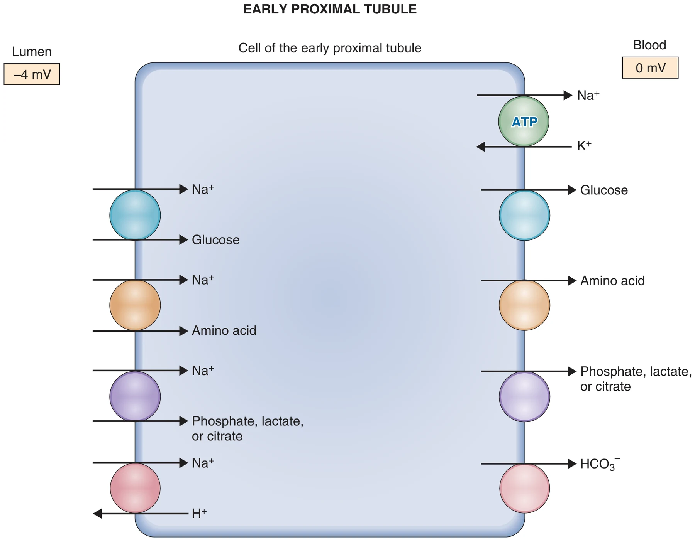
Late part. The fluid left is rich in Cl⁻, which stayed behind while HCO₃⁻ was taken. So here Na⁺ is reabsorbed with Cl⁻. A Cl⁻–formate exchanger works beside the Na⁺/H⁺ exchanger to bring NaCl into the cell ("formate in the late tubule"), and Cl⁻ also diffuses between the cells. That movement of Cl⁻ makes the lumen slightly positive, which pulls Na⁺ along.

Reabsorption is isosmotic. Solute moves first and water follows it by osmosis, never the other way round. Two-thirds of the Na⁺ and two-thirds of the water leave together, so the fluid stays at plasma osmolarity.
Glomerulotubular balance
The proximal tubule reabsorbs a constant fraction (about 67%) of whatever is filtered, not a constant amount. Filter more and it reabsorbs more. This is glomerulotubular balance. It protects the body from losing a flood of fluid whenever GFR rises.
The link is the peritubular capillary, which picks up the reabsorbed fluid. Its blood has just left the glomerulus.
- GFR rises, so a larger share of the plasma is filtered (higher filtration fraction).
- The blood that leaves the glomerulus has lost more water, so its protein is more concentrated.
- Higher protein means a higher oncotic pressure (πc) in the peritubular capillary.
- That stronger pull draws more fluid out of the spaces around the proximal tubule cells into the capillary. Reabsorption rises.
The main force taking reabsorbed fluid into the peritubular capillary is the capillary's oncotic pressure. It is not a difference in osmolarity, because proximal fluid is isosmotic.
ECF volume uses the same forces. In ECF contraction (vomiting, diarrhea, bleeding), plasma protein is concentrated and capillary pressure is low, so proximal reabsorption goes up. In ECF expansion (a saline infusion), protein is diluted and capillary pressure is high, so reabsorption goes down and more is excreted.
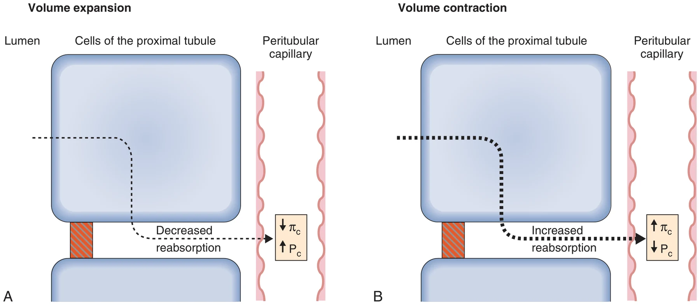
Thick ascending limb and early distal tubule: salt without water
Thick ascending limb. The Na⁺-K⁺-2Cl⁻ cotransporter carries all four ions in. Some of the K⁺ leaks straight back into the lumen, which leaves the lumen positive. That positive voltage pushes Ca²⁺ and Mg²⁺ out between the cells Ch 8. The wall is waterproof, so salt leaves and water stays, and the fluid becomes dilute. This is the diluting segment.
These later segments are load-dependent: deliver more Na⁺ and they reabsorb more. That explains diuretic strength. A drug that acts in the proximal tubule is weak, because the loop catches most of the Na⁺ it lets go. Loop diuretics such as furosemide are the strongest, because the small segments after the loop cannot catch 25% of the filtered Na⁺.
Early distal tubule. The Na⁺-Cl⁻ cotransporter is the door, and thiazides block it. It is also waterproof, so it is called the cortical diluting segment.
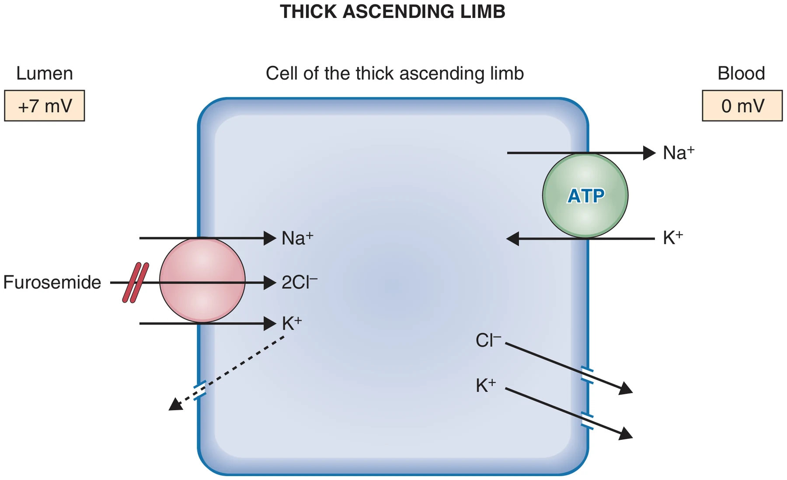
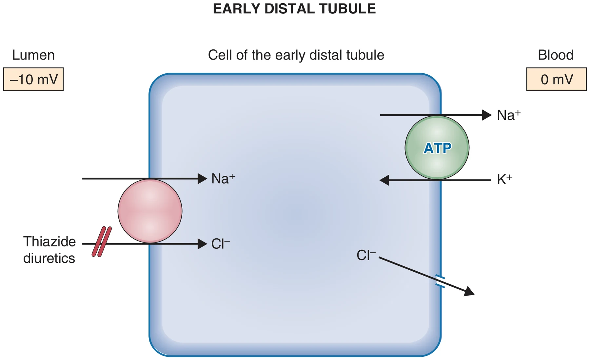
Late distal tubule and collecting duct: the final adjustment
Only 3% of the Na⁺ is handled here, but it is the last word, so hormones control it. Two cell types sit side by side.
Principal cells reabsorb Na⁺ through a channel, ENaC. Positive charge leaves the lumen, so the lumen becomes strongly negative (−50 mV). That negative lumen is what drives K⁺ out of the cell into the urine Ch 7. These cells reabsorb water only when ADH is present Ch 9.
α-Intercalated cells secrete H⁺ Ch 11 and reabsorb K⁺.
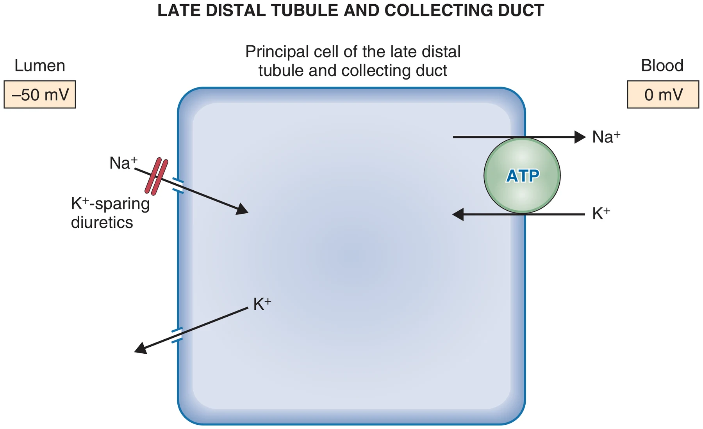
Aldosterone is a steroid from the adrenal cortex (zona glomerulosa). It enters the principal cell, binds its receptor and switches on genes for more ENaC and more Na⁺/K⁺ pumps. The result is more Na⁺ reabsorbed, more K⁺ secreted and more H⁺ secreted.
Two kinds of drug oppose it. Spironolactone blocks the aldosterone receptor. Amiloride and triamterene block ENaC itself. Both are weak diuretics, and both keep K⁺ in the body.
How the body controls ECF volume
The kidney responds to the effective arterial blood volume, the part of the ECF that is in the arteries and perfusing tissues. When it falls, the juxtaglomerular cells release renin. Three things trigger renin: low pressure in the afferent arteriole, sympathetic nerves acting on β₁ receptors, and less NaCl reaching the macula densa.
Renin cuts angiotensinogen (from the liver) into angiotensin I. Angiotensin-converting enzyme (ACE), mainly in the lungs, turns that into angiotensin II. Angiotensin II constricts arterioles, stimulates the Na⁺/H⁺ exchanger in the proximal tubule, and releases aldosterone. The whole chain is the renin–angiotensin–aldosterone system.
ANP (atrial natriuretic peptide) works the other way. Stretched atria release it when volume is high.
| Signal | Too much Na⁺ (volume high) | Too little Na⁺ (volume low) |
|---|---|---|
| Sympathetic nerves | ↓. Afferent arteriole dilates, GFR ↑, proximal reabsorption ↓ | ↑. Afferent constricts, GFR ↓, proximal reabsorption ↑ |
| Renin, angiotensin II, aldosterone | ↓. Less reabsorbed in proximal tubule and collecting duct | ↑. More reabsorbed in both |
| ANP | ↑. Afferent dilates, efferent constricts (GFR ↑). Collecting duct reabsorbs less | ↓ |
| Peritubular oncotic pressure | ↓. Proximal reabsorption ↓ | ↑. Proximal reabsorption ↑ |
| Result | Na⁺ excretion ↑ | Na⁺ excretion ↓ |
Diuretics in one table
| Class and drugs | Where and what it blocks | Na⁺ lost | Plasma K⁺ | Urine Ca²⁺ | Acid–base |
|---|---|---|---|---|---|
| Carbonic anhydrase inhibitor: acetazolamide | Proximal tubule. Blocks HCO₃⁻ reabsorption, so NaHCO₃ is lost | Small | ↓ | — | Metabolic acidosis |
| Osmotic: mannitol (and glucose in diabetes) | Proximal tubule. A solute that is not reabsorbed holds water in the tubule | Small, mostly water | ↓ | — | — |
| Loop: furosemide, bumetanide, ethacrynic acid | TAL. Na⁺-K⁺-2Cl⁻ cotransporter | Up to 25% | ↓ | ↑ | Metabolic alkalosis |
| Thiazide: hydrochlorothiazide, chlorothiazide, metolazone | Early distal tubule. Na⁺-Cl⁻ cotransporter | About 5% | ↓ | ↓ | Metabolic alkalosis |
| K⁺-sparing: spironolactone; amiloride, triamterene | Principal cells. Aldosterone receptor; ENaC | 1–3% | ↑ | — | Metabolic acidosis |
You do not need to memorize the last three columns. Three rules give them.
- K⁺. Any diuretic that acts before the principal cells sends them more Na⁺ and more flow, and they secrete more K⁺. A diuretic that acts on the principal cells stops K⁺ secretion. Why
- Ca²⁺. Loop diuretics remove the positive voltage that drives Ca²⁺ reabsorption, so urine Ca²⁺ rises. Thiazides do the opposite. Why
- Acid–base. Loop and thiazide diuretics shrink the ECF, which causes an alkalosis. Acetazolamide dumps HCO₃⁻. K⁺-sparing drugs block H⁺ secretion along with K⁺ secretion. Why
Uses. Furosemide: moderate to severe edema (lung, heart, liver) and to lower a high blood Ca²⁺. Thiazides: mild hypertension and edema, and to prevent calcium kidney stones. Mannitol: brain swelling. Spironolactone: added to another diuretic to hold on to K⁺.
Spironolactone blocks the receptor. Amiloride and triamterene block the channel. Glomerulotubular balance keeps the fraction reabsorbed constant, not the amount.
Potassium
Plasma K⁺ depends on two things: how K⁺ is split between the cells and the fluid outside them, and whether the kidney excretes exactly what is eaten.
Where K⁺ is, and why the number matters
98% of the body's K⁺ is inside cells, at about 150 mEq/L. Only 2% is outside, at 3.5–5 mEq/L. Because nearly all of it is inside, a small shift in or out changes plasma K⁺ a lot.
The K⁺ gradient sets the resting voltage of nerve and muscle. So both high K⁺ (hyperkalemia) and low K⁺ (hypokalemia) cause muscle weakness and abnormal heart rhythms.
| Plasma K⁺ | What happens |
|---|---|
| Below 3.5 | Weakness. ECG: flat T wave, then a U wave. The kidney also stops responding to ADH Ch 9. |
| 6 | Tingling, weakness. ECG: tall peaked T wave. |
| 8 | Severe arrhythmia. ECG: long PR, wide QRS. |
| 10 | Ventricular fibrillation, cardiac arrest. |
Hyperkalemia most often comes from poor kidney function or from tissue injury.
Internal balance: K⁺ moving in and out of cells
One rule covers most of it: anything that speeds up the Na⁺/K⁺ pump moves K⁺ into cells and lowers plasma K⁺.

| Factor | K⁺ into cells (plasma K⁺ ↓) | K⁺ out of cells (plasma K⁺ ↑) |
|---|---|---|
| Insulin | Insulin given | Lack of insulin (diabetes, ketoacidosis) |
| β₂ receptor | β₂-agonists | β-blockers |
| α₁ receptor | α₁-blockers | α₁-agonists |
| Acid–base | Alkalosis | Acidosis |
| Osmolarity | Low (hyposmolarity) | High (hyperosmolarity) |
| Cells | Rapid building of new cells | Cell lysis; exercise; Na⁺/K⁺ pump inhibitors (digoxin) |
Insulin speeds up the pump. This is how the K⁺ of a meal is put away. It does not carry K⁺ in with glucose.
Acid–base. Cells soak up extra H⁺, and each H⁺ that enters trades places with a K⁺ that leaves. So acidosis raises plasma K⁺ and alkalosis lowers it. The shift is small in respiratory disorders and in acidosis from organic acids (lactic acid, ketoacids), because there the acid's own anion enters the cell with the H⁺ and no K⁺ needs to leave.
Hyperosmolarity pulls water out of cells. The K⁺ left inside is more concentrated, so it diffuses out.
Cell lysis spills cell K⁺ into the blood: hemolysis, muscle breakdown (rhabdomyolysis), burns, or tumor cells killed by chemotherapy. Exercise releases K⁺ from working muscle. The rise is small and reverses with rest, and the K⁺ dilates local arterioles, which brings the muscle more blood. In a patient whose kidneys have failed, exercise can cause real hyperkalemia.
Rapid cell building uses K⁺ up. When B12 or folate deficiency is treated, the marrow makes cells so fast that plasma K⁺ falls.
The problem gives you a list of drugs and conditions.
- Take each item in turn and mark it "in" or "out" from the table.
- Add any effect on the kidney (a loop or thiazide diuretic loses K⁺; a K⁺-sparing drug keeps it).
- Add them up.
Worked. A woman takes a β₂-agonist for asthma, an α₁-blocker and a loop diuretic. Her plasma osmolarity is 270 (low). She is weak, with an abnormal rhythm. β₂-agonist: in. α₁-blocker: in. Hyposmolarity: in. Loop diuretic: K⁺ lost in urine. All four point the same way: hypokalemia.
Missed dialysis, K⁺ 7. The kidneys cannot excrete it, so the K⁺ has to be pushed into cells. Give insulin (with dextrose only to prevent low blood sugar) or a β₂-agonist. Both work by speeding the Na⁺/K⁺ pump. Hypertonic saline, a β-blocker or spironolactone would make it worse.
Lymphoma just treated, uric acid rising fast. This is tumor lysis. Hyperkalemia is what kills first.
External balance: K⁺ along the nephron
Urine K⁺ must match intake, which varies widely. So K⁺ excretion ranges from 1% to 110% of the filtered load.
| Segment | What it does |
|---|---|
| Glomerulus | Freely filtered (K⁺ is not bound to protein) |
| Proximal tubule | Reabsorbs 67%. Constant. |
| Thick ascending limb | Reabsorbs 20% on the Na⁺-K⁺-2Cl⁻ cotransporter. Constant. |
| Late distal tubule and collecting duct | The adjustable part. α-Intercalated cells reabsorb K⁺. Principal cells secrete it. |
α-Intercalated cells have an H⁺–K⁺ pump (an ATPase) on the lumen side. It pumps H⁺ out into the urine and K⁺ in. A low-K⁺ diet turns it up, so almost no K⁺ is lost.
Principal cells: how K⁺ is secreted
- The Na⁺/K⁺ pump on the blood side loads the cell with K⁺.
- Na⁺ enters from the lumen through ENaC. Positive charge has left the lumen, so the lumen is very negative (about −50 mV).
- K⁺ leaves through K⁺ channels on the lumen side. Two forces push it: the high K⁺ inside the cell, and the negative lumen pulling on a positive ion.

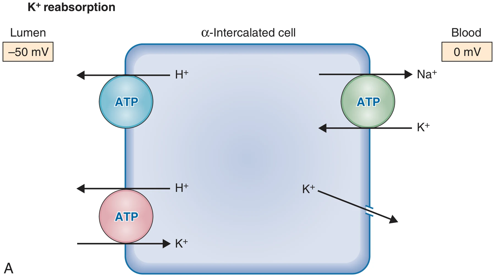
So secretion rises with anything that raises cell K⁺, lowers lumen K⁺, or makes the lumen more negative. Every factor below is one of those three.
| Factor | K⁺ secretion | Why |
|---|---|---|
| High-K⁺ diet | ↑ | Cell K⁺ rises. Diet is the biggest factor. |
| Aldosterone | ↑ | More Na⁺ channels, more pumps, more K⁺ channels |
| More Na⁺ arriving (loop or thiazide diuretic, high-Na⁺ diet) | ↑ | More Na⁺ enters, so more K⁺ is pumped in and the lumen is more negative |
| Fast urine flow (any diuretic acting upstream) | ↑ | Secreted K⁺ is washed away, so lumen K⁺ stays low |
| Alkalosis | ↑ | H⁺ leaves the cell and K⁺ enters it, so cell K⁺ rises |
| Anions the tubule cannot reabsorb (sulfate, HCO₃⁻) | ↑ | They make the lumen more negative |
| Low Mg²⁺ | ↑ | Mg²⁺ normally holds the K⁺ channel shut |
| Acidosis; low-K⁺ diet | ↓ | Cell K⁺ falls |
| K⁺-sparing diuretics | ↓ | No Na⁺ entry (amiloride, triamterene) or no aldosterone effect (spironolactone) |
Notice that acid–base hits plasma K⁺ twice in the same direction. Acidosis shifts K⁺ out of cells and slows its secretion. Alkalosis shifts it in and speeds its secretion.
Loop diuretics lose the most K⁺, because they also block the K⁺ reabsorbed on the Na⁺-K⁺-2Cl⁻ cotransporter. K⁺-sparing drugs are often paired with a loop or thiazide diuretic to cancel the K⁺ loss.
Hypertension, muscle weakness, metabolic alkalosis, adrenal tumor. Too much aldosterone: Na⁺ is kept, K⁺ and H⁺ are lost. Expect hypokalemia.
Choosing a diuretic. A patient already on an ACE inhibitor and a β₁-blocker makes less aldosterone (both drugs lower it), so K⁺ runs high. Avoid spironolactone. A patient with edema and a low K⁺ should get amiloride, because every other class loses more K⁺.
β-blockers raise K⁺. α₁-blockers lower it. In the collecting duct, principal cells secrete K⁺ and α-intercalated cells reabsorb it.
Phosphate, calcium and magnesium
Most of the body's phosphate, calcium and magnesium is stored in bone. The kidney sets their plasma levels by how much of the filtered amount it takes back.
| Phosphate | Ca²⁺ | Mg²⁺ | |
|---|---|---|---|
| Stored in bone | 85% | 99% | 60% |
| Bound to plasma protein (not filtered) | 10% | 40% | 20% |
| Proximal tubule reabsorbs | 85% | 67% | 30% |
| Thick ascending limb reabsorbs | 0 | 25% | 60% |
| Distal tubule reabsorbs | 0 | 8% (the controlled part) | 5% |
| Excreted | 15% | Under 1% | 5% |
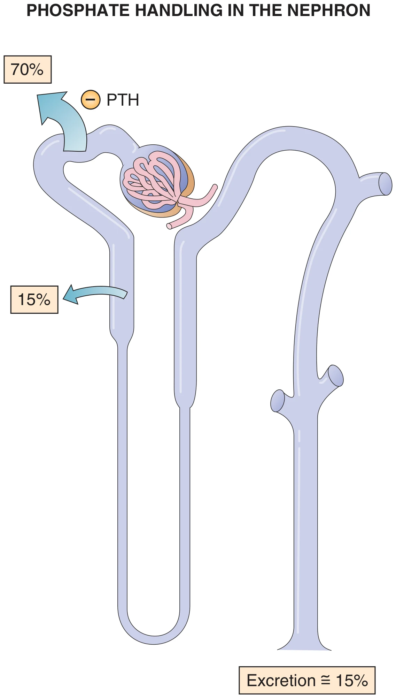


Phosphate
Phosphate builds bone, is part of DNA and ATP, and buffers acid in the urine.
It is reabsorbed only in the proximal tubule, by Na⁺–phosphate cotransporters on the lumen side. They saturate, so there is a transport maximum, as with glucose Ch 5. Phosphate that is not taken back there is never taken back. About 15% is always left in the urine, and this leftover has a job: it carries H⁺ out of the body as titratable acid Ch 11. That is why phosphate is not 100% reabsorbed.
PTH (parathyroid hormone) binds a receptor on the blood side of the proximal cell. The signal runs through a G protein and adenylyl cyclase to make cAMP, and cAMP shuts down the Na⁺–phosphate cotransporters. More phosphate is lost in the urine (phosphaturia). Some of the cAMP leaks into the urine too.
Urine has high phosphate and high cAMP. The receptor being stimulated is the PTH receptor. ADH also works through cAMP, but it does not cause phosphaturia.
Pseudohypoparathyroidism. The receptor, G protein or cyclase is broken. PTH is high, yet urine phosphate and urine cAMP stay low.
Calcium
In plasma, 40% of Ca²⁺ is bound to protein, 10% is bound to small anions, and 50% is free (ionized). Only the 60% not on protein is filtered, so filtered load = GFR × plasma Ca²⁺ × 0.6.
pH changes the free Ca²⁺, not the total. Albumin has sites that hold either H⁺ or Ca²⁺. In acidemia, H⁺ takes the sites and pushes Ca²⁺ off, so free Ca²⁺ rises. In alkalemia, H⁺ leaves and more Ca²⁺ is bound, so free Ca²⁺ falls. Low free Ca²⁺ makes nerves fire too easily: tingling, numbness around the mouth, muscle spasm (tetany). A person hyperventilating in a panic attack gets exactly this.
Ca²⁺ takes a different route in each segment. Early on it goes between the cells. In the distal tubule it must go through them.
| Segment | Route and driving force | What changes it |
|---|---|---|
| Proximal tubule (67%) | Between cells, carried along with Na⁺ and water | Follows Na⁺ |
| Thick ascending limb (25%) | Between cells, pushed by the positive lumen voltage | Loop diuretics remove the voltage |
| Distal tubule (8%) | Through the cell only (the lumen is negative here). In by a Ca²⁺ channel, out by a Na⁺/Ca²⁺ exchanger and a Ca²⁺ pump | PTH opens the channel. Thiazides speed the exchanger. |
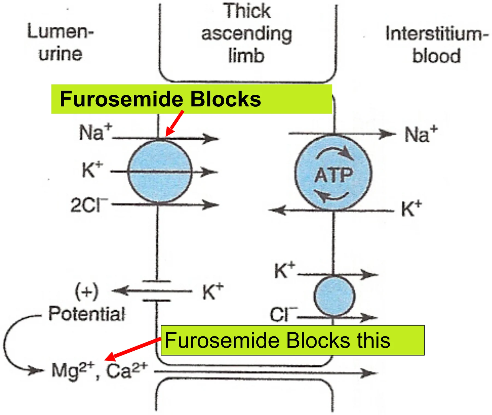
Loop diuretic.
- The Na⁺-K⁺-2Cl⁻ cotransporter is blocked.
- No K⁺ leaks back, so the positive voltage disappears.
- Nothing pushes Ca²⁺ (or Mg²⁺) between the cells.
- The distal tubule cannot rescue it, because it is busy with the extra Na⁺ that arrived as well.
- Urine Ca²⁺ rises. Used to treat a high blood Ca²⁺.
Thiazide.
- The Na⁺-Cl⁻ cotransporter is blocked, so Na⁺ inside the distal cell falls.
- The Na⁺/Ca²⁺ exchanger on the blood side runs faster (a steeper Na⁺ gradient), pulling Ca²⁺ out of the cell.
- More Ca²⁺ enters from the lumen to replace it.
- Urine Ca²⁺ falls. Used to prevent calcium kidney stones. Over years it can raise blood Ca²⁺.
A high blood Ca²⁺ acts like a loop diuretic on its own. A Ca²⁺ sensor on the thick ascending limb switches off the cotransporter, the voltage falls, and more Ca²⁺ and Mg²⁺ are lost.
PTH on the kidney: lose phosphate, keep calcium. It blocks phosphate reabsorption in the proximal tubule and raises Ca²⁺ reabsorption in the distal tubule. It also stimulates the kidney to make active vitamin D.
Parathyroids removed by accident during thyroid surgery. No PTH: Ca²⁺ is lost in urine and phosphate is kept. Low Ca²⁺ and high phosphate.
End-stage kidney failure. Also low Ca²⁺ and high phosphate, for different reasons. Ca²⁺ is low because the kidney no longer makes active vitamin D, so the gut absorbs less. Phosphate is high because the kidney cannot excrete it. Both keep PTH high (secondary hyperparathyroidism), and PTH dissolves bone. The high phosphate is treated with binders taken by mouth (calcium carbonate, calcium acetate, sevelamer, lanthanum).
Magnesium
Mg²⁺ is a helper for hundreds of enzymes, including all that use ATP. It is needed for PTH release, so low Mg²⁺ causes low PTH and then low Ca²⁺. It also holds the kidney's K⁺ channels shut, so low Mg²⁺ wastes K⁺ Ch 7.
Its main site is the thick ascending limb, where the same positive voltage pushes it between the cells (through tight-junction proteins called claudins). So loop diuretics cause large Mg²⁺ losses and hypomagnesemia: nerve symptoms, tetany, arrhythmia.
Loop diuretics raise urine Ca²⁺. Thiazides lower it. PTH lowers urine Ca²⁺ but raises urine phosphate. Acidemia raises free Ca²⁺ and alkalemia lowers it.
Water, ADH and urine concentration
The kidney holds plasma osmolarity near 290 mOsm/L by changing how much water it keeps. ADH is the signal. The salty medulla supplies the pull.
ADH: the signal
Too little water. Plasma osmolarity rises. Osmoreceptors in the anterior hypothalamus sense it and do two things: release ADH (antidiuretic hormone) and cause thirst. ADH makes the late distal tubule and collecting duct let water through. Water is reabsorbed, the urine becomes small in volume and concentrated, and plasma osmolarity comes back down.
Too much water. The reverse. ADH and thirst switch off, the ducts stay waterproof, and a large volume of dilute urine carries the extra water out.
ADH is also called vasopressin. Neurons of the hypothalamus make it (mainly the supraoptic nucleus; the paraventricular nucleus mainly makes oxytocin). It travels down their axons and is released from the posterior pituitary.
| Trigger | How sensitive | How strong |
|---|---|---|
| Rise in plasma osmolarity | Very: a 1% change is enough. ADH starts near 280 mOsm/L and climbs in a straight line. | Moderate |
| Fall in blood volume or pressure | Poor: needs about a 10% loss | Very strong once it starts |

ADH has two receptors. V2 on principal cells keeps water. V1 on blood vessels constricts them. Alcohol blocks ADH release, which is why it causes a large dilute urine.
Drinking 1 L of water raises urine flow about fifteen-fold within an hour. Drinking 1 L of salt solution barely changes it. Water dilutes the plasma, so ADH shuts off. Salt water does not change osmolarity, so ADH stays on.
How ADH opens the collecting duct
ADH binds the V2 receptor on the blood side of the principal cell. The signal runs through a G protein and adenylyl cyclase to cAMP, then protein kinase A. Vesicles holding water channels, aquaporin 2 (AQP2), are inserted into the lumen membrane. Water now crosses the cell and leaves on the blood side through other aquaporins that are always there.

Water is never pumped. It only moves by osmosis toward the saltier side. ADH just opens the door, and the medulla must be salty for water to leave.
ADH does three things in the kidney: opens water channels (the main one), strengthens the Na⁺-K⁺-2Cl⁻ cotransporter of the thick ascending limb, and switches on urea transport in the inner medullary collecting duct.
A dehydrated runner has very high ADH. Where is most water reabsorbed? Still the proximal tubule, which takes 67% with or without ADH. ADH only decides what happens to part of the remaining third.
The salty medulla: countercurrent multiplication
The fluid around the tubules is 300 mOsm/L in the cortex and rises steadily to 1,200 at the tip of the papilla. Two things build this gradient: NaCl from the loop of Henle, and urea from the collecting duct.
The loop works because its two limbs are opposites.
| Limb | Water | Salt | So the fluid inside… |
|---|---|---|---|
| Descending | Leaves freely | Cannot leave | gets concentrated on the way down (to 1,200) |
| Ascending | Cannot leave | Pumped out | gets diluted on the way up (to 100) |
Start with everything at 300 and repeat two steps.
- Single effect. The thick ascending limb pumps NaCl into the surrounding fluid. Water cannot follow. The pump can hold a difference of 200: ascending fluid falls to 200 and the surroundings rise to 400. Water then leaves the descending limb until it is 400 too.
- Flow. New 300 fluid enters from the proximal tubule and pushes the 400 fluid down toward the bend.

Each repeat moves concentrated fluid deeper, where the pump adds another 200 on top. A side-to-side difference of 200 is multiplied into a top-to-bottom gradient of 300 to 1,200. In the end the descending limb and surroundings read 300, 700, 1,000, 1,200 going down. The ascending limb is 200 lower at every level and delivers fluid at 100.
The gradient is bigger with longer loops, a stronger pump (ADH) and more urea. It is smaller when flow through the loop or the vasa recta is fast, because the salt is washed away. Loop diuretics block the pump, so the kidney can then make neither concentrated nor fully dilute urine.
Urea
Urea is the waste product of protein. It is freely filtered and after that moves only passively. So urea follows water: wherever water is reabsorbed, the urea left behind gets more concentrated and diffuses out after it.
| Segment | What happens to urea | Filtered urea still in the tubule |
|---|---|---|
| Proximal tubule | Half is reabsorbed, following water | 50% |
| Thin descending limb | Urea is secreted into it from the urea-rich medulla | 110% at the bend |
| Thick ascending limb, distal tubule, cortical collecting duct | No urea crosses. With ADH water leaves, so urea concentration climbs | 110% |
| Inner medullary collecting duct | ADH switches on a urea transporter (UT1). Urea diffuses out into the medulla | 40% is excreted |
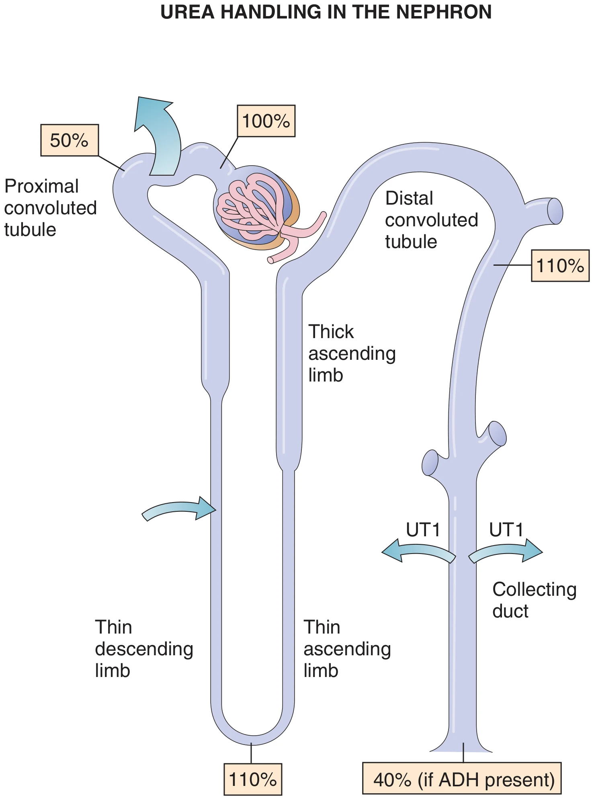
The urea that leaves the collecting duct makes up about half the osmolarity of the inner medulla. Some of it re-enters the thin limb and goes round again. This is urea recycling. Without ADH, less urea is reabsorbed and more is excreted. On a low-protein diet there is less urea, so the kidney concentrates urine less well.
In dehydration, ADH sends a lot of water into the medulla. What keeps that water from washing out the gradient? The urea transporter: urea follows the water in.
The problem gives you a BUN (normal 7–20 mg/dL) and a creatinine (normal 0.7–1.2 mg/dL).
- Divide BUN by creatinine.
- Ratio above 20, creatinine normal or nearly so: dehydration. Urea is reabsorbed and creatinine is not. A shrunken ECF raises proximal reabsorption, and high ADH adds the urea transporter. So BUN climbs alone.
- Both high, ratio normal: the kidney itself. A fall in GFR raises both together.
Worked. Diarrhea, fever, weak fast pulse. BUN 60, creatinine 1.2. Ratio = 60 ÷ 1.2 = 50. Dehydration.
A low BUN fits a poorly nourished person who drinks freely: little protein, so little urea.
When the kidneys fail, urea builds up (uremia). Dialysis runs blood past a salt solution across a thin membrane. Small molecules such as urea diffuse out and proteins and cells stay.
Vasa recta: keeping the gradient
The vasa recta are hairpin capillaries that follow the loops. If ordinary straight capillaries ran through the medulla they would carry its salt away. The hairpin shape prevents that. Going down, blood picks up salt and loses water. Coming back up, it gives the salt back and takes water. It enters at 300 and leaves at only 325. This passive process is countercurrent exchange.
Multiplication (the loop, active) builds the gradient. Exchange (the vasa recta, passive) keeps it.
Concentrated or dilute urine
The first part is the same either way. The proximal tubule leaves the fluid at 300. The thick ascending limb and early distal tubule remove salt without water, so fluid reaching the late distal tubule is always dilute. ADH decides what happens next.
| Osmolarity (mOsm/L) | ADH high | No ADH |
|---|---|---|
| End of proximal tubule | 300 | 300 |
| Bend of the loop | 1,200 | 600 |
| End of thick ascending limb | 100 | 120 |
| Late distal tubule | 300 | about 100 |
| Final urine | 1,200, small volume | 75, large volume |
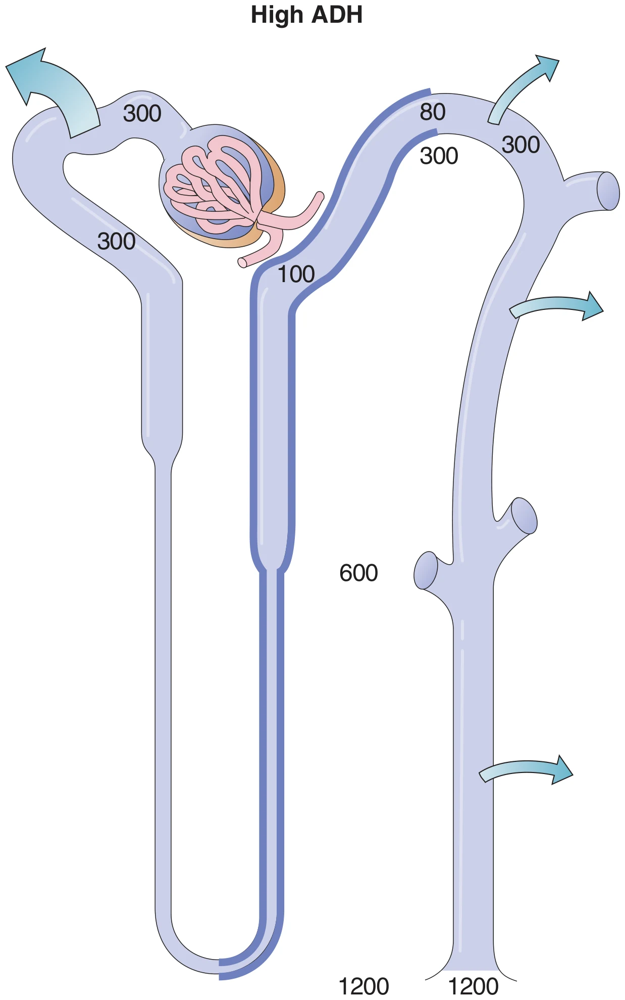

With ADH, the fluid in the collecting duct comes into balance with the fluid around it, so the most concentrated the urine can be is the osmolarity at the papilla tip. Without ADH the ducts stay waterproof and keep removing a little salt, so the urine ends up even more dilute than it started. The gradient itself is also weaker without ADH (600 at the tip).
Free-water clearance
Free water is water with no solute in it. Free-water clearance asks: compared with urine that matches plasma, is the kidney getting rid of extra water or holding water back?
First find how much urine would be needed to carry the solutes at plasma concentration (the osmolar clearance):
Cosm = Uosm × VPosm
Whatever urine flow is left over is free water:
CH₂O = V − Cosm
Uosm and Posm = urine and plasma osmolarity. V = urine flow.
The problem gives you urine osmolarity, plasma osmolarity, and sometimes urine flow.
- Get the sign first, with no arithmetic. Urine more dilute than plasma: positive. Urine more concentrated than plasma: negative. Equal: zero.
- Read the sign. Positive = free water is being excreted = ADH is low or not working. Negative = water is being kept = ADH is acting.
- If a number is asked: Cosm = Uosm × V ÷ Posm, then subtract it from V.
Worked. V 10 mL/min, urine 100, plasma 290. Urine is more dilute, so the answer must be positive. Cosm = 100 × 10 ÷ 290 = 3.45. CH₂O = 10 − 3.45 = +6.55 mL/min.
Worked. Plasma 250, urine 450. Plasma is low, so ADH should be off and urine dilute. But urine is more concentrated than plasma: free-water clearance is negative, so ADH is acting when it should not. That is SIADH.
A loop diuretic gives a free-water clearance of zero, because the diluting segment is blocked and no free water is made.
Too much ADH, too little ADH
| ADH | Plasma osmolarity | Urine | Urine volume | Free-water clearance | |
|---|---|---|---|---|---|
| Water deprivation | ↑ | high-normal | concentrated | low | negative |
| Water drinking | ↓ | low-normal | dilute | high | positive |
| SIADH | ↑↑ | low | concentrated | low | negative |
| Central diabetes insipidus | ↓↓ | high | dilute | high | positive |
| Nephrogenic diabetes insipidus | ↑ | high | dilute | high | positive |
SIADH (syndrome of inappropriate ADH). ADH is released even though plasma is already dilute. Causes: head injury, lung disease, drugs, and tumors that make ADH (classically small cell, or "oat cell", lung cancer). Water is kept, so plasma osmolarity and plasma Na⁺ fall. The giveaway is urine that is concentrated and still contains plenty of Na⁺ while the plasma is dilute. Treatment blocks ADH's action on the principal cell (demeclocycline), so fewer aquaporins are inserted.
Diabetes insipidus. There is too little ADH effect, so huge volumes of dilute urine are passed and the patient drinks constantly. If drinking falls behind, plasma Na⁺ rises dangerously.
| Central | Nephrogenic | |
|---|---|---|
| Problem | The brain makes no ADH | The kidney ignores ADH |
| Causes | Head trauma, tumor, lack of oxygen | Lithium, high Ca²⁺, low K⁺, chronic kidney disease |
| ADH level | Low | High |
| Give desmopressin (an ADH copy) | Urine concentrates | No change |
| Treatment | Desmopressin | Remove the cause; thiazide |
Why a diuretic helps nephrogenic diabetes insipidus. A thiazide blocks salt removal in the early distal tubule, a diluting segment, so less free water is made. It also shrinks the ECF a little, which lowers GFR and raises proximal reabsorption, so less fluid reaches the collecting duct.
A head injury can cause either SIADH or central diabetes insipidus. Compare urine with plasma osmolarity to tell which.
An abnormal plasma Na⁺, high or low, causes brain symptoms only: confusion, lethargy, stupor, coma.
pH and buffers
The body makes acid all day. Three defenses deal with it, in order of speed: buffers act in seconds, the lungs in minutes, the kidneys over hours to days.
pH and H⁺
pH is a way of writing the hydrogen ion (H⁺) concentration: pH = −log [H⁺]. Normal arterial blood has 40 nEq/L of H⁺, which is pH 7.40 (range 7.37–7.42). More H⁺ means a lower pH.
Below 7.40 is acidemia and above is alkalemia. The process causing it is called acidosis or alkalosis.
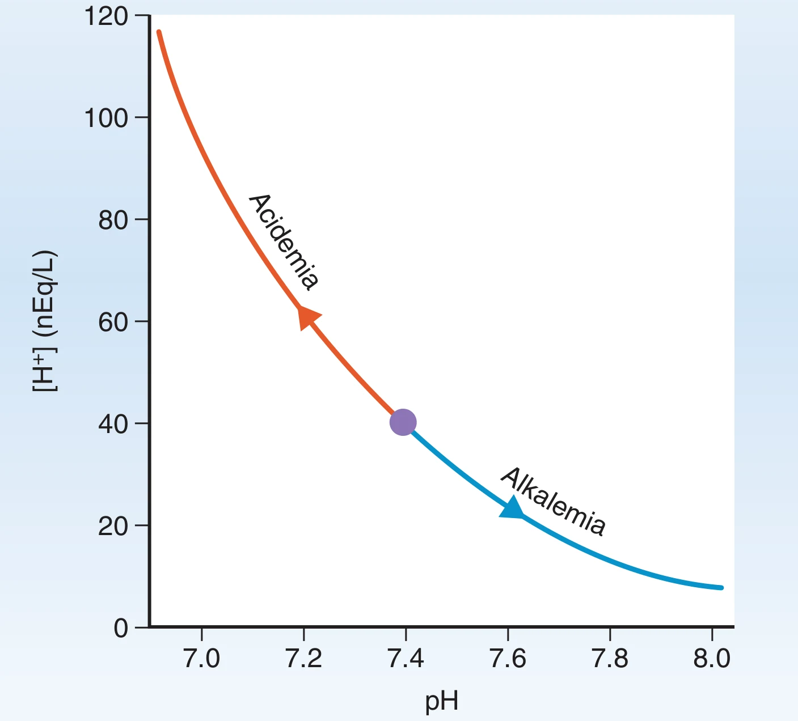
Each whole pH unit is a ten-fold change in H⁺. For comparison, stomach juice is pH 1–2 and pancreatic juice is pH 8.
An acid gives up H⁺. A base accepts H⁺. A strong acid (HCl) gives up all its H⁺ at once. A weak acid (carbonic acid) gives up only some.
Where the acid comes from
| Volatile acid | Fixed acid | |
|---|---|---|
| What it is | CO₂ | Every other acid |
| Source | Normal aerobic metabolism. A huge amount. | About 50 mmol/day, from protein and phospholipid in the diet |
| Normal examples | — | Sulfuric acid (from methionine, cysteine); hydrochloric acid (from lysine, arginine); phosphoric acid (from phospholipids) |
| Removed by | Lungs, breathed out | Buffered first, then excreted by the kidney |
CO₂ is not an acid itself, but it becomes one in water. The enzyme carbonic anhydrase speeds this reaction in both directions:
CO₂ + H₂O ⇌ H₂CO₃ ⇌ H⁺ + HCO₃⁻
Add CO₂ and the reaction runs to the right: more H⁺, lower pH. Remove CO₂ and it runs to the left.
How blood carries CO₂. In the tissues CO₂ enters red cells, where carbonic anhydrase turns it into H⁺ and HCO₃⁻. The HCO₃⁻ leaves the cell in exchange for Cl⁻, and about 90% of CO₂ travels this way. Hemoglobin soaks up the H⁺. A little CO₂ binds hemoglobin directly as carbaminohemoglobin. (Carboxyhemoglobin is something else: hemoglobin carrying carbon monoxide.)
Abnormal fixed acids appear in disease or poisoning.
| Acid | Comes from |
|---|---|
| Ketoacids (β-hydroxybutyric, acetoacetic) | Uncontrolled diabetes |
| Lactic acid | Tissue without enough oxygen: hard exercise, shock, sepsis |
| Salicylic acid | Aspirin overdose |
| Formic acid | Methanol |
| Glycolic and oxalic acid | Ethylene glycol (antifreeze) |
A patient with end-stage kidney disease misses dialysis for two weeks. The diet keeps making fixed acid and only the kidney can remove it. The result is metabolic acidosis.
Buffers
A buffer is a weak acid (written HA) together with its base form (A⁻). If H⁺ is added, A⁻ picks it up. If H⁺ is removed, HA releases some. Either way pH barely moves.
The pK of a buffer is the pH at which it is half HA and half A⁻. A buffer works well only within about 1 pH unit of its pK. So the ideal blood buffer is a weak acid with a pK near 7.4.
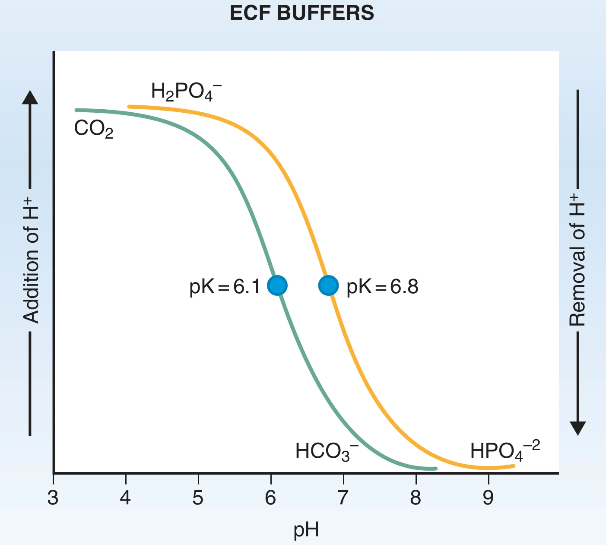
| Buffer | Acid / base form | pK | Verdict |
|---|---|---|---|
| Bicarbonate (outside cells) | CO₂ / HCO₃⁻ | 6.1 | The most important, even though its pK is far from 7.4. There is a lot of it (24 mEq/L), and its acid form, CO₂, can be breathed out. |
| Phosphate (outside cells) | H₂PO₄⁻ / HPO₄²⁻ | 6.8 | Better pK but very little in blood. It matters most in the urine. |
| Hemoglobin (inside red cells) | — | 6.7 with oxygen, 7.9 without | After it gives up oxygen in the tissues it becomes a better buffer, exactly where CO₂ is adding H⁺. So venous pH (7.37) is almost the same as arterial. |
| Organic phosphates (inside cells) | — | — | ATP, ADP, AMP, 2,3-DPG |
Plasma albumin also buffers H⁺, on the same sites that hold Ca²⁺. That is why pH changes free Ca²⁺ Ch 8. Cells buffer H⁺ too, swapping it for K⁺, which is why pH changes plasma K⁺ Ch 7.
The Henderson–Hasselbalch equation
In words: pH = the buffer's pK + the log of (base form ÷ acid form).
pH = 6.1 + log HCO₃⁻0.03 × PCO₂
HCO₃⁻ in mEq/L (normal 24). PCO₂ = the pressure of CO₂ in arterial blood, in mm Hg (normal 40). Multiplying by 0.03 turns that pressure into the amount of CO₂ dissolved. Normal: 24 ÷ (0.03 × 40) = 24 ÷ 1.2 = 20, and log 20 = 1.3, so pH = 6.1 + 1.3 = 7.4.
The point of the equation is that pH depends on the ratio of HCO₃⁻ to CO₂, not on either one alone. HCO₃⁻ is under the kidney's control and CO₂ is under the lungs' control. Whenever the ratio is 20 to 1, pH is 7.4. A PCO₂ of 60 with HCO₃⁻ 36 gives 7.4. So does 20 with 12. This is how compensation works Ch 12.
The problem gives you HCO₃⁻ and PCO₂.
- Dissolved CO₂ = 0.03 × PCO₂.
- Ratio = HCO₃⁻ ÷ dissolved CO₂.
- pH = 6.1 + log(ratio). Useful logs: log 10 = 1.0, log 16 = 1.2, log 20 = 1.3, log 25 = 1.4.
- No calculator? Compare the ratio with 20. Below 20 is acid, above 20 is alkaline.
Worked. A long seizure adds 12 mmol/L of lactic acid. Bicarbonate buffers it at once: HCO₃⁻ falls from 24 to 12. With PCO₂ still 40, ratio = 12 ÷ 1.2 = 10, pH = 6.1 + 1.0 = 7.10.
Within minutes the acid drives faster breathing and PCO₂ falls to 24. Ratio = 12 ÷ 0.72 = 16.7, pH = 6.1 + 1.22 = 7.32. HCO₃⁻ did not recover. Lowering CO₂ repaired the ratio.
A patient with stable COPD has a PCO₂ of 70. His pH is about 7.35, not 7.15, because over months the kidneys raised his HCO₃⁻ and brought the ratio back toward 20.
How the kidney handles acid
The kidney has two acid–base jobs. First, take back all the HCO₃⁻ that was filtered. Second, excrete the day's fixed acid, and in doing so make new HCO₃⁻ to replace what the acid used up.
Job 1: taking back filtered HCO₃⁻
Each day 180 L × 24 mEq/L = 4,320 mEq of HCO₃⁻ is filtered, and 99.9% is reabsorbed. About 85% of that happens in the proximal tubule. HCO₃⁻ cannot cross the lumen membrane directly, so the cell takes it apart and rebuilds it.
- The Na⁺/H⁺ exchanger on the lumen side lets Na⁺ in and pushes H⁺ out into the lumen.
- In the lumen, that H⁺ joins a filtered HCO₃⁻ to make H₂CO₃. Carbonic anhydrase on the brush border splits it into CO₂ and water.
- CO₂ and water diffuse into the cell. Carbonic anhydrase inside the cell turns them back into H⁺ and HCO₃⁻.
- The HCO₃⁻ leaves on the blood side. The H⁺ goes back out on the exchanger to catch the next HCO₃⁻.

The H⁺ only goes round in a circle. So this job excretes no acid, and the pH of the tubular fluid hardly changes. The net result is one Na⁺ and one HCO₃⁻ returned to blood. Acetazolamide blocks carbonic anhydrase, so HCO₃⁻ stays in the urine.
| Change | Effect on HCO₃⁻ reabsorption | Why |
|---|---|---|
| Plasma HCO₃⁻ above 40 mEq/L | Extra is excreted | The mechanism is saturated. This is how a metabolic alkalosis corrects itself. |
| PCO₂ ↑ | ↑ | More CO₂ in the cell makes more H⁺ to secrete |
| PCO₂ ↓ | ↓ | Less H⁺ to secrete |
| ECF volume contraction | ↑ | Angiotensin II stimulates the Na⁺/H⁺ exchanger |
| ECF volume expansion | ↓ | Less proximal reabsorption overall |
The two PCO₂ rows are the kidney's compensation for breathing disorders. If CO₂ is retained, the kidney keeps more HCO₃⁻. If CO₂ is blown off, it lets HCO₃⁻ go. This takes days.
The volume row explains contraction alkalosis. When the ECF shrinks (vomiting, loop or thiazide diuretics), angiotensin II rises and drives the Na⁺/H⁺ exchanger. The kidney is trying to keep Na⁺, but every Na⁺ taken this way brings back an HCO₃⁻. Plasma HCO₃⁻ rises. The cure is to restore volume with saline.
Job 2: excreting acid and making new HCO₃⁻
The 50 mmol of fixed acid made each day uses up 50 mmol of HCO₃⁻ in buffering. The kidney must excrete that H⁺ and give the HCO₃⁻ back.
The α-intercalated cell of the late distal tubule and collecting duct does this. Inside it, carbonic anhydrase makes H⁺ and HCO₃⁻ from CO₂ and water. The H⁺ is pumped into the urine by an H⁺ pump (H⁺-ATPase, turned up by aldosterone) and by the H⁺–K⁺ pump. The HCO₃⁻ goes to the blood. Because this HCO₃⁻ was never filtered, it is new.
There is one problem. The pump cannot push urine pH below 4.4, and at that pH free H⁺ amounts to almost nothing. So the H⁺ must leave attached to a buffer. There are two.
| Titratable acid | Ammonium (NH₄⁺) | |
|---|---|---|
| Buffer | Filtered phosphate: HPO₄²⁻ + H⁺ → H₂PO₄⁻ | Ammonia made by the kidney: NH₃ + H⁺ → NH₄⁺ |
| Amount per day | 20 mmol (40%) | 30 mmol (60%) |
| Can it increase? | Hardly. Limited by how much phosphate is filtered (the 15% not reabsorbed) | Yes. The kidney makes more NH₃ when acid builds up |

Phosphate suits the job because its pK is 6.8. At the pH of filtrate (7.4), most of it is in the HPO₄²⁻ form, ready to accept H⁺.
How NH₄⁺ is excreted.
- Proximal tubule cells make NH₃ from the amino acid glutamine. The leftover carbon skeleton becomes new HCO₃⁻.
- NH₄⁺ enters the tubule. The thick ascending limb reabsorbs some (it rides in K⁺'s place on the Na⁺-K⁺-2Cl⁻ cotransporter), which builds up ammonia in the medulla.
- Uncharged NH₃ diffuses from the medulla into the collecting duct. There it meets secreted H⁺ and becomes NH₄⁺. The charged form cannot diffuse back, so it is trapped and excreted.

The more acid the urine, the more NH₃ is converted and trapped, so more keeps diffusing in.
| mmol per day | Fixed acid made | Titratable acid | NH₄⁺ | Why |
|---|---|---|---|---|
| Normal | 50 | 20 | 30 | — |
| Diabetic ketoacidosis | 500 | 100 | 400 | Acidosis switches on NH₃ production |
| Chronic kidney failure | 50 | 10 | 5 | Too few nephrons to make NH₃ or filter phosphate, so acid is retained |
K⁺ changes NH₃ production. High plasma K⁺ suppresses it, so less acid is excreted. Low plasma K⁺ stimulates it.
Aldosterone drives both cell types of the collecting duct: principal cells reabsorb Na⁺ and secrete K⁺, and α-intercalated cells secrete H⁺. Too much aldosterone therefore gives metabolic alkalosis with low K⁺. Too little gives acidosis with high K⁺.
Taking back filtered HCO₃⁻ (proximal) excretes no acid. Only H⁺ that leaves as H₂PO₄⁻ or NH₄⁺ makes new HCO₃⁻. A urine pH of 4.4 is a limit, not a measure of how much acid is leaving: the buffers carry the load.
Acid–base disorders
Every blood gas problem is solved the same way: name the disorder, check the compensation, find the cause.
The four disorders and their compensation
Normal arterial values: pH 7.40, PCO₂ 40 mm Hg, HCO₃⁻ 24 mEq/L.
A metabolic disorder starts with a change in HCO₃⁻. A respiratory disorder starts with a change in PCO₂.
pH depends on the ratio of HCO₃⁻ to PCO₂ Ch 10. So when one of them changes, the body moves the other one in the same direction, which pulls the ratio back toward normal. That is compensation. The lungs compensate for metabolic disorders within minutes. The kidneys compensate for respiratory disorders over days. Compensation brings pH toward 7.40 but never all the way and never past it.
| Disorder | Starts with | pH | Compensation | How much to expect |
|---|---|---|---|---|
| Metabolic acidosis | HCO₃⁻ ↓ | ↓ | Breathe faster: PCO₂ ↓ | PCO₂ falls 1.3 for each 1 fall in HCO₃⁻ |
| Metabolic alkalosis | HCO₃⁻ ↑ | ↑ | Breathe slower: PCO₂ ↑ | PCO₂ rises 0.7 for each 1 rise in HCO₃⁻ |
| Respiratory acidosis | PCO₂ ↑ | ↓ | Kidney keeps HCO₃⁻: HCO₃⁻ ↑ | For each 1 rise in PCO₂: HCO₃⁻ +0.1 if acute, +0.4 if chronic |
| Respiratory alkalosis | PCO₂ ↓ | ↑ | Kidney excretes HCO₃⁻: HCO₃⁻ ↓ | For each 1 fall in PCO₂: HCO₃⁻ −0.2 if acute, −0.4 if chronic |
A fast way to tell them apart. Look at the arrows in a row. In a metabolic disorder pH, HCO₃⁻ and PCO₂ all move the same way. In a respiratory disorder pH moves the opposite way to the other two.
The pH itself has side effects. Acidemia raises plasma K⁺ and free Ca²⁺. Alkalemia lowers both Ch 7 Ch 8.
Reading a blood gas
The problem gives you pH, PCO₂ and HCO₃⁻, and sometimes Na⁺ and Cl⁻.
- pH. Below 7.40 is acidemia. Above is alkalemia.
- Metabolic or respiratory? If all three values moved the same way as pH, it is metabolic. If PCO₂ moved opposite to pH, it is respiratory. The value that did not cause the problem is the compensation.
- Is the compensation the right size? Use the table. If it matches, there is one disorder. If not, there are two. In a respiratory disorder this step also tells acute from chronic.
- If it is a metabolic acidosis, calculate the anion gap (below).
- If the gap is high and a poison is possible, calculate the osmolar gap (below).
Worked: heart attack. pH 7.22, PCO₂ 25, HCO₃⁻ 10, anion gap 30.
1. Acidemia.
2. All three are down: metabolic acidosis.
3. HCO₃⁻ fell 24 − 10 = 14, so PCO₂ should fall 14 × 1.3 = 18, to about 22. Actual 25 is close: one disorder.
4. The gap is high, so acid was added. Tissue short of oxygen makes lactic acid.
Worked: long-time smoker, chronic cough. pH 7.34, PCO₂ 62, HCO₃⁻ 33.
1. Acidemia.
2. PCO₂ is up, opposite to pH: respiratory acidosis.
3. PCO₂ rose 62 − 40 = 22. If chronic, HCO₃⁻ should rise 22 × 0.4 = 9, to about 33. It matches: chronic respiratory acidosis (COPD), with the kidneys compensating. (If it were acute, HCO₃⁻ would be only 24 + 2 = 26.)
Worked: anxiety for several days. Choose between 7.51 / 20 / 24 and 7.44 / 25 / 16. Both are respiratory alkalosis. "Several days" means the kidneys have had time to excrete HCO₃⁻, so HCO₃⁻ is low and pH is nearly normal: 7.44 / 25 / 16. The first is the picture in the first minutes, with HCO₃⁻ still 24.
Trap: a low PCO₂ in a metabolic acidosis is compensation, not a second disease. And breathing fast does not prove PCO₂ is low: the rapid shallow breaths of COPD do not clear CO₂.
Metabolic acidosis and the anion gap
HCO₃⁻ is low. Either acid was added and used it up, or HCO₃⁻ itself was lost, or the kidney failed to excrete the daily acid. The fall in pH stimulates chemoreceptors (mainly the carotid bodies), which drive faster, deeper breathing.
Anion gap = Na⁺ − (Cl⁻ + HCO₃⁻)
Normal is about 6–12 mEq/L. Positive and negative charges in plasma are always equal. Na⁺ is larger than Cl⁻ + HCO₃⁻ only because some negative ions are not measured: albumin, phosphate, sulfate, citrate. The gap is those unmeasured ions.

When HCO₃⁻ falls, another negative ion has to take its place. Which one tells you the cause.
| High gap | Normal gap | |
|---|---|---|
| What happened | An acid was added. Its H⁺ used up HCO₃⁻ and its own negative ion stays as an unmeasured anion. | HCO₃⁻ was lost. The kidney keeps Cl⁻ in its place, so Cl⁻ is high. |
| Example numbers (Na⁺ / Cl⁻ / HCO₃⁻) | 140 / 108 / 15: gap 17 | 140 / 118 / 12: gap 10 |
| Causes | Diabetic ketoacidosis; lactic acidosis; aspirin; methanol; ethylene glycol; chronic kidney failure | Diarrhea; renal tubular acidosis |
| Cause | Mechanism and clues |
|---|---|
| Diabetic ketoacidosis | No insulin, so fat is burned instead of glucose and ketoacids pile up |
| Lactic acidosis | Tissue without enough oxygen: shock, sepsis, low blood pressure, heart attack, seizure, hard exercise |
| Methanol | Alcohol dehydrogenase turns it into formaldehyde, then formic acid. Damages the retina (blindness). |
| Ethylene glycol (antifreeze) | Turned into glycolic and oxalic acid. Calcium oxalate crystals in urine, low Ca²⁺. |
| Aspirin (salicylate) | Poisons mitochondria, so lactic acid builds up. See below. |
| Chronic kidney failure | Cannot excrete the daily fixed acid or make NH₄⁺ |
| Diarrhea | The colon secretes HCO₃⁻, so HCO₃⁻ and K⁺ are lost |
| Renal tubular acidosis (RTA) | Type 2 (proximal): cannot reabsorb HCO₃⁻. Type 1 (distal): cannot secrete H⁺. Type 4: too little aldosterone, so K⁺ is high and NH₃ production is suppressed. |
For methanol and ethylene glycol, fomepizole blocks alcohol dehydrogenase so the toxic acids are never made, and dialysis removes the alcohol.
Aspirin causes two disorders. It stimulates the breathing center directly, giving a respiratory alkalosis. This comes first, within hours. It also causes the metabolic acidosis above, which in an adult may take a day to appear. Ringing in the ears is the clue. Treatment is to make the urine alkaline Ch 5.
Fever, low blood pressure, fast breathing. Na⁺ 140, Cl⁻ 106, HCO₃⁻ 14. Gap = 140 − 120 = 20, high. Acid was added: lactic acidosis from septic shock.
Same symptoms. Na⁺ 136, Cl⁻ 118, HCO₃⁻ 12. Gap = 136 − 130 = 6, normal, with a high Cl⁻. HCO₃⁻ was lost: diarrhea.
The osmolar gap
Osmolar gap = measured osmolarity − calculated osmolarity
Calculated = 2 × Na⁺ + glucose/18 + BUN/2.8 Ch 1. The formula counts nearly every normal solute, so the gap is normally small.
A large gap means a small foreign molecule is in the blood in large amounts: methanol or ethylene glycol. Calculated 280 and measured 380 leave 100 mOsm/L unexplained. A high anion gap plus a high osmolar gap points to a toxic alcohol.
Metabolic alkalosis
HCO₃⁻ is high. Causes: vomiting, loop and thiazide diuretics, too much aldosterone or cortisol (Cushing syndrome), Bartter syndrome (an inherited defect that acts like a loop diuretic), swallowing a lot of antacid or bicarbonate, and low K⁺.
Vomiting shows the two stages every metabolic alkalosis needs.
- Something starts it. For each H⁺ the stomach secretes, one HCO₃⁻ enters the blood. Normally that acid reaches the duodenum and the pancreas secretes HCO₃⁻ to match. Vomiting removes the acid, so the HCO₃⁻ stays in the blood.
- Something keeps it going. The kidney could simply excrete the extra HCO₃⁻. It does not, because fluid was lost. Angiotensin II drives HCO₃⁻ reabsorption contraction alkalosis, and aldosterone drives H⁺ and K⁺ secretion.
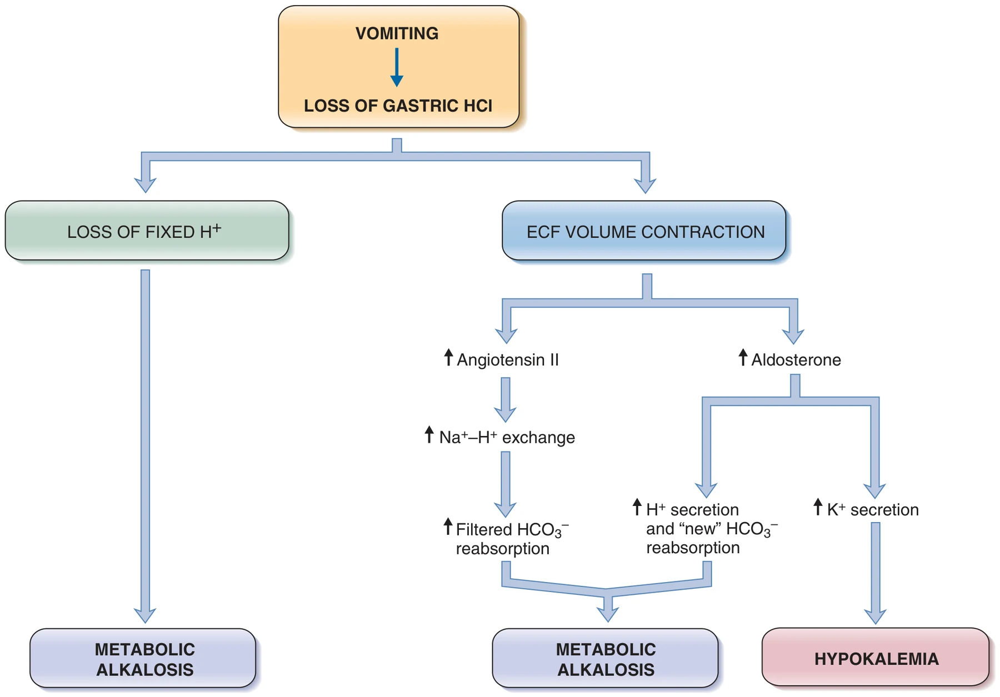
The alkalosis also shifts K⁺ into cells, so vomiting causes low K⁺ by two routes. Treatment is saline and K⁺.
A young woman with self-induced vomiting has pH 7.46, PCO₂ 54, HCO₃⁻ 36. All three are up: metabolic alkalosis with the lungs compensating. If it continues, the danger is an arrhythmia from hypokalemia.
Respiratory acidosis and alkalosis
| Respiratory acidosis: breathing too little, CO₂ kept | Respiratory alkalosis: breathing too much, CO₂ lost |
|---|---|
| Breathing center slowed: opiates, barbiturates, anesthetics, central sleep apnea | Breathing center stimulated: anxiety, pain, fever, aspirin, gram-negative sepsis |
| Weak nerves or muscles: Guillain–Barré, polio, ALS, multiple sclerosis | Low oxygen: high altitude, pneumonia, pulmonary embolism, severe anemia |
| Blocked airway: aspiration, obstructive sleep apnea | Ventilator set too high |
| Poor gas exchange: COPD, pneumonia, pulmonary edema | Also the normal compensation for a metabolic acidosis |
The lungs cannot compensate for their own disorder. Only the kidneys can, which is why acute and chronic respiratory disorders look different.
After a day of intestinal bleeding a patient has a hematocrit of 15 with normal blood pressure. Severe anemia makes him breathe fast: respiratory alkalosis. Blood pressure is normal, so there is no shock and no lactic acidosis yet.
A normal anion gap acidosis still has a cause: look for a high Cl⁻. If PCO₂ is lower than the compensation rule predicts, there is a second disorder, a respiratory alkalosis (think aspirin).
Every equation in one place
A lookup table. Each row links to the place where the equation is explained and worked.
| You want | Equation | Explained in |
|---|---|---|
| Volume of a fluid compartment | amount of marker ÷ plasma concentration | Ch 1 |
| Blood volume | plasma volume ÷ (1 − Hct) | Ch 1 |
| Plasma osmolarity | 2 × Na⁺ + glucose/18 + BUN/2.8 | Ch 1 |
| Net filtration pressure | PGC − PBS − πGC | Ch 3 |
| Filtered load | GFR × P | Ch 4 |
| Excretion rate | U × V | Ch 4 |
| Reabsorbed (+) or secreted (−) | filtered load − excretion rate | Ch 4 |
| Clearance | U × V ÷ P | Ch 4 |
| GFR | inulin clearance (creatinine clearance in patients) | Ch 4 |
| Fraction of filtered x excreted | Cx ÷ Cinulin | Ch 4 |
| Renal plasma flow | PAH clearance | Ch 4 |
| Renal blood flow | RPF ÷ (1 − Hct) | Ch 4 |
| Filtration fraction | GFR ÷ RPF | Ch 4 |
| Glucose excreted | filtered load − Tm (when the load is above Tm) | Ch 5 |
| Fraction of water reabsorbed | 1 − 1 ÷ TF/Pinulin | Ch 5 |
| Fraction of filtered x left in the tubule | TF/Px ÷ TF/Pinulin | Ch 5 |
| Filtered Ca²⁺ | GFR × plasma Ca²⁺ × 0.6 | Ch 8 |
| BUN-to-creatinine ratio | BUN ÷ creatinine (above 20 = dehydration) | Ch 9 |
| Osmolar clearance | Uosm × V ÷ Posm | Ch 9 |
| Free-water clearance | V − Cosm | Ch 9 |
| pH | 6.1 + log [ HCO₃⁻ ÷ (0.03 × PCO₂) ] | Ch 10 |
| Expected compensation | Metabolic acidosis: PCO₂ falls 1.3 per 1 HCO₃⁻. Metabolic alkalosis: rises 0.7. Respiratory: HCO₃⁻ moves 0.1–0.2 (acute) or 0.4 (chronic) per 1 PCO₂ | Ch 12 |
| Anion gap | Na⁺ − (Cl⁻ + HCO₃⁻) | Ch 12 |
| Osmolar gap | measured − calculated osmolarity | Ch 12 |
Numbers worth knowing
| Value | Normal | Value | Normal |
|---|---|---|---|
| GFR | 120 mL/min (180 L/day) | Arterial pH | 7.40 |
| Renal plasma flow | 600 mL/min | PCO₂ | 40 mm Hg |
| Renal blood flow | 1,200 mL/min (25% of cardiac output) | HCO₃⁻ | 24 mEq/L |
| Filtration fraction | 20% | Anion gap | 6–12 mEq/L |
| Plasma osmolarity | 290 mOsm/L | Plasma K⁺ | 3.5–5 mEq/L |
| Urine osmolarity | 50 to 1,200 mOsm/L | Plasma Na⁺ | 140 mEq/L |
| Glucose threshold; Tm | 200 mg/dL; 375 mg/min | BUN; creatinine | 7–20; 0.7–1.2 mg/dL |